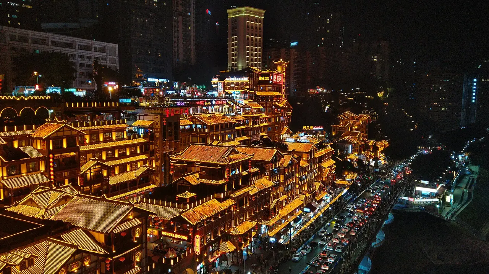
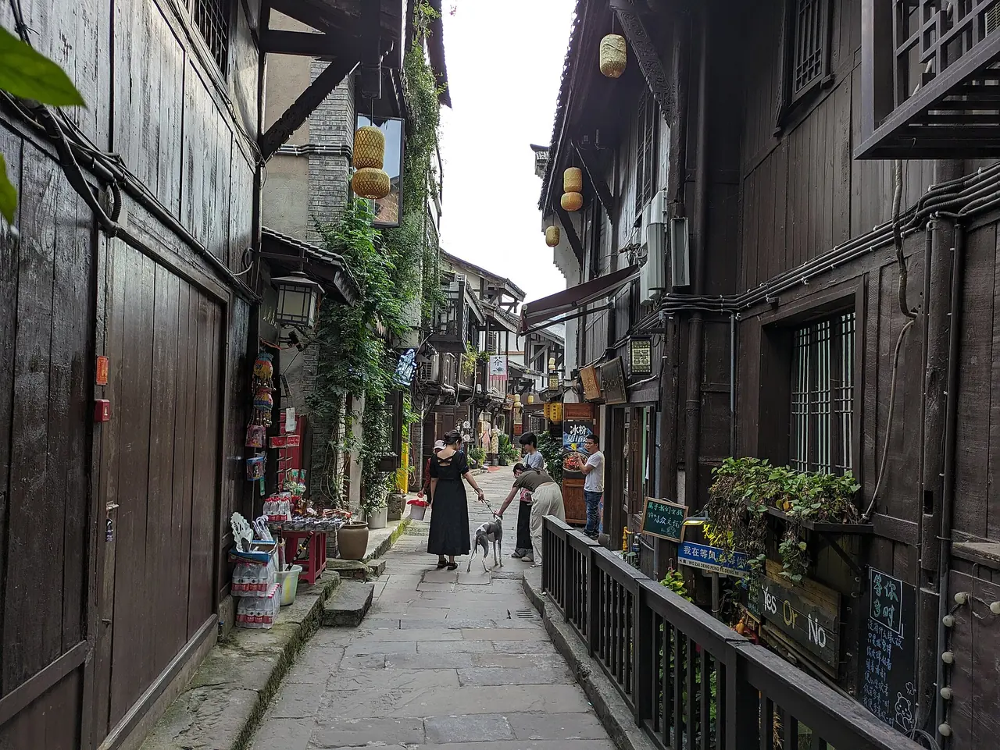

SUGGESTED JOURNEY / 4天
两江城市与大足石刻
- DAY 01
渝中山城巷、湖广会馆，傍晚沿江步行。
- DAY 02
三峡博物馆，下午沙坪坝纪念场馆，按预约选择一处深入。
- DAY 03
转往大足，参观北山石刻，住大足城区。
- DAY 04
宝顶山与石刻博物馆，留返程交通时间。
THE DESTINATION GUIDE / 西南
山城·长江·巴渝
重庆是一座直辖市，中心城区之外还有石刻、峡谷和古城。理解坡地、江河与码头文化，比只拍立体交通更能看懂城市。

重庆要按河谷、山脊与支流来读，而不是把所有目的地当作主城近郊。两江交汇的渝中呈现码头贸易、移民会馆和近代城市生长；沙坪坝、九龙坡可接续工业与抗战记忆。向西的大足以宋代石刻见长，向东的三峡兼具江峡地貌与诗歌传统，东南武隆和酉阳、黔江则进入喀斯特与武陵山文化。主城夜景只是入口，理解坡地交通和水运网络，才看得见各片区之间的联系。
把巴人山地生活、长江码头贸易、抗战陪都和现代工业四层叠起来读。湖广会馆对应移民与商帮，三峡博物馆补充区域历史，大足石刻反映宋代民间伦理；奉节诗歌中的地名，要放回峡江航行的地理背景。
3—5月、10—11月；夏季炎热，山地雨雾影响能见度。
6—9天。适合一次主题子线；完整走遍需分次安排。
主城以铁路、航空进入较方便，城区尽量把轨道交通与步行结合。车站、机场到酒店要按实际出口与坡度判断。大足、武隆、奉节和渝东南分别安排独立住宿段，先确定铁路或公路落点，再接当地车辆；三峡游船应核对停靠港、上下船日期与岸上活动。
初访可住渝中轨道站附近，方便两江与博物馆；怕坡和夜间噪声可选较平缓、远离夜市的街区。武隆住城区便于转车，住仙女山便于清早入景区；三峡与渝东南按县城分段住宿，避免每天回主城。
02 / A JOURNEY, NOT A CHECKLIST
路线为独立主题子线，不建议机械合并。到达日与离开日需按实际交通另留余量。
渝中山城巷、湖广会馆，傍晚沿江步行。
三峡博物馆，下午沙坪坝纪念场馆，按预约选择一处深入。
转往大足，参观北山石刻，住大足城区。
宝顶山与石刻博物馆，留返程交通时间。
抵武隆并在城区休息。
天生三桥，下午不再塞另一大型景区。
芙蓉洞，之后转场，按交通选择中途住宿。
龚滩古镇及乌江岸边步行，住酉阳一线。
酉阳桃花源或濯水古镇二选一，结束行程。
03 / THE CITY NOTEBOOK
每站不限固定景点与食物数量；重要目的地、景区名录、地方饮食及行程分别展开。评级范围与版本逐项说明。
共 12 个城市与片区
渝中半岛由长江、嘉陵江围合，吊脚楼、石梯和高架道路是不同年代解决坡地生活的办法。湖广会馆所见移民组织，联系着清代人口流动与水路贸易；近代商埠与抗战时期的城市记忆，又让它超越单纯码头街区。登高看楼群之后，再走一次江岸，才能理解同一地址为何会有不同高度的入口。
景观、历史和看点分别细读。时间为游览建议；评级按各项名录版本标注。
沿石梯、院落与残存老墙理解坡地生活，既看江景，也看建筑怎样解决高差、通风与出入问题。这里经过保护更新，新修立面不等于全部古貌，适合一早慢走支巷，再顺势到较低江岸；有住民的院门不擅入，台阶窄处停拍先让行。
会馆由商帮与移民群体的祭祀、议事、演戏等空间组成，戏楼、院落、木石装饰比单看外墙更能说明清代城市社会。先读移民与水运背景，再细看各院功能，可理解外来人口怎样在码头城市建立公共联系，适合愿意听讲解的建筑、人文旅行者。
以峡江自然、人居、区域历史和近现代重庆等展陈建立时间线，重点看器物出土地、三峡生活和城市变迁，而不只寻找几件热门文物。与人民大礼堂周边空间结合，能把展柜里的历史放回城市地形，适合作为初访重庆的第一处系统阅读入口。
坡地街道原先连接上下半城，如今形成经过保护、改造与商业运营的街区。观察台阶、挡墙、院落和高处现代建筑的并置，比把所有店面当老重庆原貌更有收获；可与山城巷对比不同更新方式，适合步行与城市观察，夜景之外应留一段白天看结构。
从仍可见的城门、墙段与周围地势看旧城陆路防御，理解山城不仅依河而建，也需要控制山脊和通道。现存遗迹、修整景观和后世纪念按现场说明辨认，不要求“走遍城墙”；可与七星岗周边公共街巷串联，适合对古城边界和城市生长感兴趣的游客。
解放碑周边把近现代纪念地标与商业中心叠在一起，罗汉寺又在高楼间保留宗教空间，两者步行对照能看见城市年代层次。寺院入殿、拍摄与开放依现场要求，商业街则注意建筑立面和道路高度变化；适合白天看细节，再用一段夜景补充，不把灯光当全部历史。
以下按所列来源版本补充名录，不限固定数量；转录待核者单独提示。评级属于完整景区，不自动授予每一处内部建筑。
重庆人民大礼堂建成于20世纪50年代，传统殿堂式屋顶与现代公共建筑功能结合，前方广场与三峡博物馆相对。适合从城市公共空间观察重庆建设史，也可比较山地地形与轴线布局；礼堂内部能否参观需查询当日安排，外观与内部体验不同。
名录地址：渝中区人民路173号重庆市人民大礼堂管理处
南山植物园位于南岸山地，以山地园林、植物专类园和季节花卉见长。樱花、山茶等不同花期让游览主题随时节变化，温室与室外区域也可分开选择，适合植物观察和亲子慢游；开花程度受天气影响，专类园开放及接驳依园方安排。
名录地址：南岸区南山公园路101号重庆市南山植物园管理处
红岩革命纪念馆以红岩村相关旧址和展陈，讲述中共中央南方局在重庆开展工作的历史。建筑环境、文献与人物活动结合，能帮助理解抗战时期山城的政治与社会联系；与歌乐山相关场馆分开安排，参观以馆方正式预约及开放点为准。
名录地址：渝中区红岩村52号重庆红岩革命历史文化中心
洪崖洞是嘉陵江岸结合吊脚楼形态营建的现代商业风貌区，依坡层叠的楼层与江桥夜景是主要吸引力。它有助于观察山城高差与滨江商业，但不宜把现存建筑全部当作古代民居；人流多时按官方动线进出，观景与消费可分开安排。
名录地址：渝中区嘉滨路88号重庆洪崖洞景区管理有限公司
重庆科技馆以基础科学、现代技术和互动展项为主要内容，适合亲子通过动手体验理解能源、机械与身边科学。先选一两类专题逐项操作，比只追逐大型装置更有收获；常设展、临展与特效影院的预约安排可能不同，按馆方最新信息选择。
名录地址：江北区江北城文星门街7号重庆科技馆
观音桥商圈都市旅游区以步行商业街、公共广场和城市消费文化为主，能看到重庆北部城市发展的热闹日常。适合晚间散步、尝小吃和观察商业空间，实际体验偏购物与街区生活；现代屏幕、装置和商业建筑不附会古代历史，节庆人流需留余地。
名录地址：江北区建新西路2号重庆观音桥商圈管理办公室
加勒比海水世界位于南山一带，是以滑道、造浪池和亲水设施为主要内容的现代水上乐园。适合按年龄与身高选择项目的家庭和朋友出游，体验由季节、设备维护和天气共同影响；不编造古代文化背景，实际营业期及安全限制以园方为准。
名录地址：南岸区崇文路35号重庆海昌加勒比海旅游发展有限公司管理分公司
中国民主党派历史陈列馆依托重庆特园及相关展示，介绍民主党派发展和多党合作历史。展陈应与抗战时期重庆的政治社会环境一起阅读，适合已有三峡博物馆基础后补一条专题线；按馆方开放安排参观，历史旧址与后增展示建筑分层认识。
名录地址：渝中区上清寺嘉陵桥东村1号中国民主党派历史陈列馆
铁山坪位于长江北岸山地，以森林步道、山脊观景和近郊休闲见长。适合在城市之外做半日林下散步，观察长江沿岸山体与城市扩展的关系；各入口到观景点距离不同，不把整个公园理解为平坦街心绿地，防火期与维护路线按现场公告。
名录地址：江北区唐家沱岚垭村120号重庆市铁山坪生态区建设管理委员会
重庆园博园集中展示不同地域园林，依山就水的布局把亭台、院落与城市近郊山水结合。适合选择两三类园林比较空间和造园手法，也适合亲子慢行；园内面积较大，接驳与步道分开规划，现代展园不能当成原址迁来的古代遗产。
名录地址：重庆市两江新区龙景路1号重庆市园博园管理处
弹子石老街位于南岸长江边，依坡分层的街道将历史遗存、修缮院落和现代商业相接，江对岸城市天际线也是看点。适合沿高差观察开埠以来滨江生活与新商业的叠合；新建景观不全是古物，观景、建筑阅读与餐饮消费可分别安排。
名录地址：重庆市南岸区南滨路弹子石老街重庆怡置商业管理有限公司
两江国际影视城以民国时期重庆街景为题材搭建片场与文旅街区，街道、店面招牌和布景适合了解影视如何再现城市。可把摄影体验与真实的抗战、开埠历史分开阅读；多数场景为现代营建，拍摄活动、演艺和区域开放随运营安排变化。
名录地址：渝北龙兴镇两江国际影视城重庆两江国际文化创意产业建设投资有限公司
长江索道曾承担重要的城市过江交通功能，如今也是从空中观察两岸山地城市、桥梁与江流的窗口。车厢行进时间不长，体验重点在山城交通方式和视角转换；两端站点、单程往返及排队安排需先想清楚，不能把排队时间省略为几分钟景点。
名录地址：渝中区新华路151号重庆市公共交通（集团）有限公司索道分公司
保税体验旅游景区把进口商品展示、跨境贸易相关体验与商业消费结合，适合了解内陆开放型贸易及重庆现代服务业。实际参观更接近购物与产业展示，具体展馆和接待内容须向运营方确认；不把商业样板空间附会成古代遗迹，消费按自身需要选择。
名录地址：重庆市两江新区海尔路319号重庆保税港区股份有限公司
重庆抗战遗址博物馆位于南山，以抗战时期相关建筑旧址和历史展示为主要内容，林地中的别墅群让人看到陪都时期不同的城市空间。适合结合人物活动、建筑用途与时代背景参观；各栋原址、修缮情况和展陈范围需依馆内资料辨认。
名录地址：重庆市南岸区南山植物园路1号重庆抗战遗址博物馆
鎏嘉码头位于嘉陵江北岸，以滨江步道、餐饮商业与城市夜景构成现代休闲街区。适合傍晚观察两岸山体、桥梁和建筑层次，并在允许公共区域散步；名称借用码头记忆，现有商业空间不能全部写作古代码头遗存，江岸开放受水情管理影响。
名录地址：重庆市江北区北滨一路鎏嘉码头A区珠江实业7楼重庆珠江实业有限公司
重庆欢乐谷是现代大型主题乐园，以机动游乐、亲子设施和主题演艺构成主要体验。可按惊险项目或家庭休闲分线安排，预留排队和园内步行时间；项目停运、夜场与演出会随季节天气调整，不必强求一次玩遍，限制条件依运营方现场公告。
名录地址：重庆市两江新区金渝大道29号重庆华侨城实业发展有限公司欢乐谷旅游分公司
大鹅岭旅游景区串联鹅岭山地公园、观景空间及相关文化创意场所，能从高处读懂长江、嘉陵江与渝中半岛的关系。适合把园林、旧工业改造和城市摄影结合，保留步行爬坡时间；历史园林、现代文创街区和独立经营场馆各有参观范围。
名录地址：渝中区长江滨江路151号25楼重庆康翔实业集团有限公司
鸿恩寺公园位于嘉陵江北侧城市山地，以林荫步道、桂花等植物与高处观景著称，鸿恩阁也是醒目的景观建筑。适合在傍晚或花季轻量登高观察城市，园名不能直接证明现有建筑皆属古寺遗存；阁楼开放、夜间灯光与山路按公园安排。
名录地址：重庆市江北区大石坝七村200号重庆市江北区城市公共场地管理所
重庆市规划展览馆通过城市模型、地图与专题展陈，解释山地城市发展、水系交通和空间规划。适合在游览多个城区之后对照实际地形，理解看似分散的桥梁、山脊和中心片区如何联系；规划愿景与已经建成的现实要区分，展项开放按馆方安排。
名录地址：重庆市南岸区南滨路131号
从早餐、主食到家常菜、甜点与茶饮，了解做法、吃法和地方背景，再按自己的胃口搭配。
通常指以碱水面和麻辣调料为主体的汤面或干拌面，不加肉浇头也能成立。面煮好后趁热拌匀，让油辣子、花椒、葱蒜与酱油包住面条，重点尝香、麻、辣和面条弹性。它是重庆街头早餐的重要组成，点单先说汤干、软硬和辣度，比只照着招牌喊一碗更容易吃合口。
在重庆面食底味上加入炖得软糯的豌豆和炒香的杂酱，豆泥、肉臊与面条混合后更浓厚。吃前要从碗底充分拌起，先尝原有调料再决定加辣；豌豆与杂酱会增加饱腹感，小碗常适合继续尝别的小吃。它与清爽小面形成对照，能看见同一种早餐如何靠浇头变化出不同口感。
牛油或清油锅底中煮熟肉、菌菇、蔬菜和豆制品，香气来自油脂、辣椒、花椒与复合香料。毛肚、黄喉等有各自烹调要求，不熟悉时让店员说明；人数少可先点半份，蔬菜分批下。火锅既是聚餐方式也是重庆城市饮食名片，码头起源说法众多，不把单一传说当作确定史实。
红薯等淀粉制成的粉条煮软，配酸味、油辣子、花生碎与葱花等调味，入口滑韧而汤汁浓。先把碗底醋和调料拌开，再小口试温，麻辣不等于必须加到最重。它适合在坡地步行途中作简餐，和小麦面、米粉比较，可感受重庆街头主食原料与口感的丰富变化。
薄面皮包肉馅煮熟，再用红油、酱油、蒜泥等拌食，是川渝对馄饨的一种常见吃法。皮薄软、肉馅鲜，红油更重香气与调味，不能只凭颜色判断辣度。可点小份与清汤版本对照，先吃抄手再按需要拌汁；它属于川渝共享的面点传统，不必虚构为渝中独有的发明。
嫩豆花、米饭和单独的蘸水组成一顿朴素饭食，豆花以凝固豆浆保留细嫩口感，蘸水可有辣椒、豆瓣、葱蒜等。先尝一口原豆花，再少量蘸汁，更容易分辨豆香和调料层次。它体现重庆家常饮食里清淡本体与重味蘸料并存的特点，适合连续火锅后换一顿简单热饭。
猪肉裹调味米粉蒸至软糯，常与土豆、红薯或其他垫底食材同蒸，肉汁被米粉吸收，口感厚而不脆。吃时连一点垫底蔬菜配饭，先问肥瘦、份量和是否带辣。川渝蒸菜常见于家常餐桌与便餐铺，能补充火锅之外的地方做菜方式，两人合点一份通常比同时叠加几道大荤更合适。
糯米皮包芝麻、花生等甜馅，煮后外皮柔软，咬开有油润甜香，具体馅料按店家版本确认。糯米与糖油很有饱腹感，可用小碗作为一顿饭的收尾，中心温度高不要整颗急吞。汤圆是川渝常见节令与日常点心，山城版本的卖点在小巧口感和城市小吃传统，不需要附会未经证实的名人故事。
传统版本以假酸浆种子等搓出植物凝胶，再配红糖水、醪糟、花生或果干，成品滑嫩、甜润。市面也有方便原料制作的版本，可看是否现做、配料如何保存；芝麻花生过敏者先说明。它是重庆夏季和麻辣餐后的常见甜食，选择少量配料反而更容易尝到凝胶本身的轻软口感。
糯米蒸熟后捶打成黏韧米团，再煎炸、烤制或切块，红糖与黄豆粉是常见搭配。热吃外层香、内里糯，放凉后会更扎实，适合几人分小份。它属于川渝及西南广泛共享的米食传统，旅行中可把现做点心与真空伴手礼分开选择，别把一次点满多种糯米甜食当作完整正餐。
收录全面，不代表一次全去。先选主题，再决定天数。
上午从山城巷顺坡慢走，午后到湖广会馆，再沿江抵朝天门看两江汇流方向；三峡博物馆单留次日上午，之后选择一段嘉陵江岸步行。南北岸跨江移动先查轨道站出口，步行导航距离不能代表爬坡强度。
沙坪坝的大学、抗战旧址与工业遗存，呈现重庆向半岛之外扩展的过程。磁器口原是嘉陵江沿岸古镇，码头和商业推动街区形成；黄桷坪则可从美术教育、创作空间和铁路厂区的并置，观察工业城市转变。历史纪念场馆与艺术街区内容差异很大，分开慢看更容易形成清晰记忆。

景观、历史和看点分别细读。时间为游览建议；评级按各项名录版本标注。
嘉陵江水运与商贸是古镇形成的重要背景，石板街、坡巷和临江关系比小吃招牌更值得读。主街商业更新明显，可从侧巷看建筑尺度与仍有生活功能的部分；配合码头位置理解“磁器口”地名和城市通道，适合愿意早到慢走、接受街区混合生活的游客。
依红岩联线官方开放安排选一组旧址和陈列，先从文献中厘清人物、年代与地点，再看牢房、院落和地形。影视、小说与现场史料不能互相代替，情绪之外也要读具体证据；场馆间有山地接驳，适合独立半天安静参观，不与多个远郊景区硬串。
美术教育、工作室与老工业生活在此并置，涂鸦只是外层，街巷、展览与创作空间更能说明社区变化。选择实际开放的展览，工作室和教学空间先问再进；沿公共路观察铁路、厂房与艺术如何相遇，适合对当代城市文化有兴趣、不只寻找一面拍照墙的人。
博物馆利用原兵工防空洞等空间展开抗战、工业和社会历史主题，洞体形态本身也提供山城战时生产的观察。先核对当日开放分馆，选两至三条主线读实物和来源，不必一次扫完全部主题；阴凉洞道与室外温差明显，适合给工业史、抗战史留完整半天。
沙坪坝的大学群与抗战时期教育、现代城市发展相连，可按学校当前访客安排观察校园轴线、旧建筑和城市边界。校园不是随时开放的公园，无法进入时改看校外公共街区与正式校史展讯；适合把大学城生活与纪念场馆相互补充，不为打卡影响教学和学生通行。
以正规动物展示、保育与科普为主题，熊猫之外也可观察不同动物的栖息需求与展区设计，适合亲子放慢节奏。入园前看实际开放与动物活动安排，动物未露面并不需要敲玻璃或投喂催出；与黄桷坪分开留交通时间，不将观察动物简化成争抢几张近照。
以下按所列来源版本补充名录，不限固定数量；转录待核者单独提示。评级属于完整景区，不自动授予每一处内部建筑。
歌乐山森林公园以山林、步道和高处观景为主要内容，是沙坪坝近郊认识城市山地的休闲去处。林下散步与季节植物观察比匆忙追景更合适，山道仍有明显坡度；它与歌乐山烈士陵园分别管理，不能把登山公园路线等同于红色纪念场馆路线。
名录地址：沙坪坝区歌乐山镇重庆市沙坪坝区歌乐山旅游景区事务中心
歌乐山烈士陵园相关参观区域包括革命烈士纪念与旧址展示，记录革命者在特殊历史环境下的斗争。应结合渣滓洞、白公馆等各点的具体历史阅读原址，而不是把小说情节都当史实；场馆分散，预约、交通和开放范围向红岩相关官方平台查询。
名录地址：重庆沙坪坝区烈士墓政法三村63号重庆红岩革命历史文化中心
海兰云天位于重庆西部城市近郊，以温泉、园林和度假配套构成现代休闲景区。适合把泡汤、散步与住宿放在较松弛的半日或周末中安排；这里的看点是休闲服务和环境，未见足够依据不附会古代遗迹，实际开放池区及预约向运营方查询。
名录地址：九龙坡区金凤镇海兰云天重庆海兰云天会务有限公司
贝迪颐园以温泉泡池、园林和住宿餐饮等配套形成休闲度假空间，适合从城市游览转入较轻量的泡汤行程。不同池区和附加体验按实际运营选择，温泉休闲不能等同疾病治疗；出发前确认接待时间、票种和可用设施，避免只依旧门票介绍。
名录地址：九龙坡区白市驿镇农科大道288号重庆贝迪颐园温泉
华岩旅游区以华岩寺、湖面和山林环境构成城市近郊的宗教文化与休闲空间。殿堂布局、石窟相关景观和园路可结合观看，适合轻量慢行并认识地方佛教文化；仍有宗教活动的区域遵守礼仪，建筑修缮与现代景观应同可考历史分开理解。
名录地址：重庆市九龙坡区华岩村151号重庆市九龙坡区文化和旅游发展委员会
周君记火锅食品工业体验园以底料生产和火锅文化为线索，能了解辣椒、花椒、油脂与调味品如何进入标准化加工。适合在重庆饮食体验之外补足工业生产视角，参观线与体验内容以实际接待为准；生产车间不是可随意进入的餐饮后厨。
名录地址：重庆市九龙坡区华龙大道16号重庆周君记火锅食品有限公司
融汇温泉小镇位于沙坪坝城市片区，以温泉池区、酒店和休闲商业等现代配套为主要内容，适合城市行程中安排轻量泡汤。它的价值在于便利的度假服务与环境，具体池区、夜场和附加体验另行核对；不把泡泉宣传写成确定的治疗功效。
名录地址：重庆市沙坪坝区汇泉路1号融汇温泉投资有限公司
从早餐、主食到家常菜、甜点与茶饮，了解做法、吃法和地方背景，再按自己的胃口搭配。
以熟制血旺、豆芽和多种荤素食材放入香辣红汤，关键在各食材软、脆、韧的对照，而不只是辣油多少。版本常含肥肠、毛肚等，点前确认内脏与份量，配米饭和清淡菜更合适。它与磁器口的地方饮食叙事联系紧密，但具体起源的民间说法不必当作统一史实，现场吃法比追单一“正宗配方”更可靠。
面团扭成细股后油炸，传统甜口之外也有椒盐、麻辣等版本，重点在酥脆度、油香与面香。现炸热麻花和包装带走品口感不同，先买小份比较，比沿街反复试吃更容易辨味。它与磁器口商业街和旅游伴手礼紧密结合，购买留意配料、生产日期与是否含芝麻、花生等过敏原。
细嫩豆花配米饭与蘸水，是比江湖菜更日常的川渝饭食。先舀一块豆花尝清淡豆香，再蘸辣椒、葱蒜和酱料，汤水与辣味都能自行控制；有的铺子再配烧菜或小碟。逛完磁器口或旧工业街区后，这类便饭能帮助观察居民餐桌的另一面，不必每顿都用大锅火锅代表重庆饮食。
猪肉先煮熟再切片回锅煸炒，常配豆瓣、蒜苗等，肥肉略卷、瘦肉有嚼感，酱香和蒜香突出。不同店肥瘦、厚薄不一，点前可说明，适合与米饭共享。它是川渝共享的家常菜，不专属于某条街；与毛血旺、豆花并看，能读出当地从便餐到聚餐的多种调味与火候。
米制细线配热汤、蔬菜和牛肉、酸菜等浇头，柔滑口感与碱水小面不同。红汤、清汤和砂锅做法都有，先问是否含酸菜、泡椒与内脏，再选适合的辣度。大学和居民区周边常能见到这类简餐，它更适合当一顿早餐或午餐，而不是硬加在已经点了面、粉与火锅的一餐里。
红薯淀粉制作的薄皮经烤制变软有韧性，再刷酱、卷入酸萝卜和葱等配料，外层带焦香、内部酸脆。现烤现吃口感最好，点前问辣椒和折耳根等配料，避免把热馅整口吞下。这是当代川渝夜市常见的街头小吃，可以观察城市口味怎样把红薯粉皮与酸辣调料重新组合，不需虚构古老出处。
小麦面煮熟晾凉后拌油、醋、酱油、蒜水和辣椒等，配豆芽或黄瓜形成清脆口感。先把底汁拌匀，少辣版本也可尝出蒜香与酸甜平衡；面条和配菜保存卫生比配料堆得多更重要。它是川渝居民夏季日常小吃，适合与豆花、蒸菜组成轻便一餐，不是必须带走的包装特产。
发酵糯米做成的醪糟加水煮热，再放小汤圆，有米香、轻微酒香与柔软糯感，可按店家版本加蛋或其他配料。先问甜度，注意热汤温度；对酒精敏感者应了解具体原料。它在川渝家庭与小吃铺都常见，和纯红糖冰粉的清凉口感相对，适合雨冷天气坐下来慢吃小碗。
收录全面，不代表一次全去。先选主题，再决定天数。
第一天上午磁器口，下午选择歌乐山一组纪念场馆，预留山地转车与参观时间；第二天再去黄桷坪看街区与展览。沙坪坝和九龙坡虽在同一西部城市带，跨区移动仍需时间，不建议一日加上大足。
大足石刻不是一座孤立石窟，而是分布在当地山岩上的造像群。北山主要观察唐末至宋的审美变化，宝顶山则以南宋时期成组造像呈现佛教教义及民间伦理。人物服饰、家居场景与浅白故事，让宗教艺术进入日常社会；参观时把它看作图像与文本共同编成的教材，比单认佛像名称更有收获。
景观、历史和看点分别细读。时间为游览建议；评级按各项名录版本标注。
南宋时期成组造像把宗教教义、伦理观念与日常生活组织为连续图像，先看人物关系，再读题记，能理解它怎样向普通人讲故事。千手观音、父母恩重等题材需留细看时间，修复保护也值得读；适合配讲解深入，不应只寻找一尊热门造像后匆忙离开。
窟龛集中，便于比较唐末至宋代造像的面容、衣纹、姿态和审美变化，数珠手观音等细节适合慢看。与宝顶山的成组叙事相对，这里更容易做单窟、单像的艺术观察；自然光与保护设施可能影响视野，接受观看距离，不触摸、不用强光追近照。
用年代、分布图、工艺和保护展示补足崖壁参观，把大足理解成分散的石刻群而不是一处孤立寺庙。先建立不同山体的关系，再看造像修复如何处理岩体、彩绘与金饰，更能体会文物保护工作的复杂；适合安排在宝顶山前后，炎热或雨天也能调整步行节奏。
以道教题材见长，与大足常见佛教造像形成内容对照，可留意尊神组合、衣饰、题记与地方信仰关系。其价值在于帮助理解宋代宗教世界的多样性，而不是把所有石窟都当同一种佛像；是否开放、参观方式与修缮状态逐点核对，适合石刻专题旅行者另排半日。
在山地环境中观察佛、道题材造像与崖面布局，图像组合和人物性格能补充宝顶、北山的认识。位置较偏，需落实往返车辆与官方开放安排，不把地图上靠近的一组石刻误当相连步道；适合有时间比较宗教艺术的人，资料不足的造像不凭外形随意命名。
这是石刻之外的湖岸、林地与休闲空间，可在正式开放步道观察水库与周边城镇生活，适合在长时间读造像后换一段舒缓户外。湖区不同项目、住宿与码头并非一个入口，按天气和运营公告选择；不将湖景当历史石刻的替代，也不在非允许水域游泳或乘私人无资质船。
以下按所列来源版本补充名录，不限固定数量；转录待核者单独提示。评级属于完整景区，不自动授予每一处内部建筑。
大足石刻以宝顶山、北山等多处摩崖造像共同构成，反映唐宋以来的宗教艺术与社会生活。不同片区在题材、时代和雕刻风格上各有特点，值得分开细看；宝顶山生活化叙事与北山细腻造像可相互比较，单处建筑或博物馆不自动继承整体评级。
名录地址：大足区龙岗街道北山路7号大足石刻研究院
香国公园位于大足濑溪河与化龙溪交汇一带，以湖面、廊桥、阁楼和地方文化景观组成城市生态公园。适合把水系、园林与海棠香国的文化表达一起看，也可观察当地公共生活；文化壁展和仿古设施属于现代营建，灯光活动依实际安排。
名录地址：大足区佛都大道与清明桥路交叉口南260米 重庆市大足区公园管理所
棠香人家位于大足棠香街道的乡村片区，沿龙塘沟河的步道、田园与季节花木形成休闲环境。适合在石刻参观之外看看周边乡村生活及农旅转型，重点在生态与乡土空间；公共路线、民宿和农户院落边界不同，活动与露营以正规接待为准。
名录地址：重庆市大足区棠香街道和平村便民服务中心重庆市大足区棠香街道和平村股份经济合作联合社
从早餐、主食到家常菜、甜点与茶饮，了解做法、吃法和地方背景，再按自己的胃口搭配。
鲫鱼配辣椒、泡姜、豆豉等调味熟煮，鱼肉细嫩，汤汁鲜香而带麻辣，版本可有不同。它与大足南部邮亭驿站、成渝往来歇脚饮食的地方记忆相关，制作技艺已有非遗记录。点餐先问鱼的份量与做法，配饭慢吃挑细刺；把它当完整一道菜，没必要同时再点多种重油鱼锅。
腌制发酵的冬菜与猪肉同蒸，肉片软糯，冬菜吸收肉汁并带出浓郁咸鲜，是大足冬菜入宴席的具体方式。吃时连少量菜末配饭，先问肥瘦和大小，适合多人分享。大足冬菜的意义在种植、晾晒、腌藏与发酵工艺，不能只当任意咸菜代换；不用靠未经核实的朝代故事来证明它好吃。
这是大足万古的地方鸡肉菜名，已见于当地官方美食名录；旅行时应询问当店切块、汤汁和调味方式，而不把名字理解成全国统一配方。可从熟鸡的嫩度、姜葱或辣味层次观察，点清份量与辣度后配米饭。它适合作为石刻游览之外认识乡镇餐桌的入口，不推荐来源、做法不清的冷藏拼盘。
兔肉充分熟制后切块，配红油、花椒、蒜等复合调味，肉纤维紧实，冷菜重在鲜香与麻辣层次。雍溪版本是大足官方收录的地方美食之一，具体酱汁按店家做法看，不必附会统一起源。兔骨细，吃时慢挑，选择保存卫生的现做熟食；可以与豆花或清淡汤菜组合，避免一桌都点红油菜。
三驱是大足乡镇名，凉粉是本地官方美食名录中的一项，旅行时先问原料与冷热吃法，不将不同淀粉版本混作一种固定标准。通常重点尝粉体的软、滑、弹与酸辣调料，拌开碗底再决定加辣。它适合石刻参观之间作小份点心，现制卫生与保存条件比是否宣称“秘制”更重要。
牛肉经腌制、干制等工艺后形成紧实有嚼劲的口感，香料和肉香较集中，回龙版本见于大足官方美食评选。现食熟菜与包装伴手礼的加工、保存要求不同，购买先看是否可直接食用与冷藏说明。适合切小片配茶或饭少量尝味，不能把“干巴”理解成任何来源的生肉都可直接吃。
土豆切片或切块煮熟，再拌红油、花椒、蒜等，绵软淀粉与麻辣底味相配，是大足街头辨识度较高的小吃。先拌匀再吃，小份足以比较切片脆软和浸汁程度；辣度、蒜味可以提前说明。它也反映地方小吃从居民街巷走向旅游名片的过程，品尝不必与某一家未核实店铺绑定。
将发酵冬菜等作为包子馅料，蒸后面皮柔软，内馅咸香，是当地把腌藏蔬菜融入日常主食的一种办法。点前问是否另含猪肉、油脂和辣椒，趁热吃更能分辨冬菜发酵香与面香。它与冬菜扣肉使用相同地方原料却有不同餐桌角色，适合作早餐或小份点心，不需要为了“尝全”在同一餐重复点大份冬菜菜肴。
收录全面，不代表一次全去。先选主题，再决定天数。
抵大足后先看北山与城区生活，第二天上午去宝顶山，午后补石刻博物馆再返程。若只有一天，以宝顶山与博物馆为主，别把数处山体石刻都压入同一下午；题材复杂，留一段时间听讲解比匆忙拍全景有用。
武隆的喀斯特景观来自可溶岩层在漫长地质作用下形成的洞穴、天坑和天然桥。天生三桥适合从谷底理解巨大拱体的结构，芙蓉洞转向地下沉积，仙女山则提供高地草场与林地景观。三者不在同一个步行景区，认识地貌差别后再择重点，比用影视取景标签统括武隆更具体。
景观、历史和看点分别细读。时间为游览建议；评级按各项名录版本标注。
巨大天然桥、天坑与陡壁展示地下水、侵蚀和岩体塌陷长期共同作用的结果，从谷底看桥孔尺度，结合地质说明辨认结构。影视取景只是补充，真正值得的是地貌关系与谷中植被；下行、台阶和景交都需时间，适合完整半天，不把三座桥理解成城市中三处短暂停车点。
洞内可看石笋、石钟乳、石幔等沉积形态，重点区分水流侵蚀出的空间与碳酸钙不断沉积形成的结构。灯色并非岩体本色，听科普比只按拟人名称认景更有意思；湿滑与台阶需慢走，适合地质与亲子科普，但不进入封闭侧洞，不触碰仍需保护的沉积表面。
高地草场、林缘与山地气候提供不同于峡谷的景观，选一段正式步道观察植被和季节变化，比赶全部娱乐项目更舒缓。它不是无需准备的城市草坪，云雾、风雨和温差会影响活动；适合留半天慢行、休息和亲子观察，行程与天坑、芙蓉洞分开计算末段交通。
从乌江、旧航运记忆和豆干、羊肉、醋等饮食理解场镇，今天的空间有迁建、更新与旅游展示，不能全部当作原址古建筑。走公共街巷、看地形和食品制作，比只买同款包装更有内容；适合从景区回城后独立慢走，居民与工坊拍摄先问，别影响经营和生活。
山地林景、观景设施与休闲项目构成现代景区，神话和情缘叙事属于旅游表达，不应误写成考古证据。它适合想换一种山地度假节奏的人，选开放步道而非追全娱乐；与仙女山分在不同方向，需单独留车程，观景能见度和项目开放依实际天气与公告。
可从正式码头和观景位置看喀斯特山体、水面与峡谷联系，与芙蓉洞形成地表、地下对照。水文和运营会影响船线，不承诺随到随乘，也不乘无资质船；适合对河谷地貌有兴趣者另留半天，沿岸生产、封闭和保护区域不擅入，游览不等同整条河流自由航行。
以下按所列来源版本补充名录，不限固定数量；转录待核者单独提示。评级属于完整景区，不自动授予每一处内部建筑。
武隆喀斯特旅游区由天生三桥、仙女山、芙蓉洞等组成，分别呈现天然石桥、山地草场与地下洞穴。其价值在于比较地表和地下不同的岩溶过程，宜分日游览并单列接驳时间；各分区独立售检票，联合5A并不表示一次购票即可走完全部。
名录地址：重庆市武隆喀斯特旅游产业（集团）有限公司
龙水峡地缝位于武隆，狭窄谷地、瀑布与岩壁栈道呈现喀斯特地区水流深切的景观。适合能够走较多台阶、希望比较地缝与天生桥差异的游客；它单列为4A景区，不因位于武隆就继承联合5A，出入口接驳与汛期开放需分别核对。
名录地址：重庆市武隆区仙女山街道银杏大道32号2-1重庆市武隆喀斯特旅游产业（集团）有限公司
仙女山归原小镇位于武隆荆竹村，以山地村落改造、田园风景与休闲度假配套形成现代乡村旅游空间。适合看传统村居如何与新生活方式结合，选择公共路线慢走；它与仙女山森林公园是不同景区，住宿、活动及开放空间按经营安排核实。
名录地址：重庆市武隆区仙女山街道荆竹村水竹坪社重庆市武隆区裕尚文化旅游发展有限公司
从早餐、主食到家常菜、甜点与茶饮，了解做法、吃法和地方背景，再按自己的胃口搭配。
黄豆经制浆、凝固、压制和调味等步骤形成紧实豆干，羊角传统产品以细密、绵韧和香料气味见长，可直接吃或再烹调。它与乌江羊角镇的商贸生活和地方手工食品传统相连，官方已有非遗相关介绍。先尝原味或鲜豆干，再比较麻辣包装款；买伴手礼查看生产、密封与保存要求，别把所有版本都当作同一配方。
羊肉先熟煮、切片，再配热汤和海椒、花椒、姜蒜等调味，以小碗分盛的方式食用，重点是肉香与汤味。它与羊角乌江航运、旅人歇脚和小店饮食的地方记忆有关，故事细节不必当作唯一确切起源。可先尝原汤，确认骨肉、辣度和份量，再配主食；不把民间滋补说法当作健康承诺。
以谷物等原料经传统发酵加工而成，酸味之外带复合香气，适合入凉菜、蘸水或汤面，不是一种必须大杯饮用的饮料。羊角把它与豆干等并列为地方食品名片，制作工艺有非遗记录。购买先看产品标签、配料和用途，少量比较酸香即可；关于祖传秘方与药材的故事可以阅读，不能当作疗效依据。
红薯淀粉制粉后可煮汤、酸辣拌食或入锅，吸汁能力强，口感比小麦面更滑韧。山区红薯加工体现原料保存与日常主食的多样性，不必声称只在武隆才能吃到。点单问粉条粗细、汤底及是否加内脏，先少放辣椒；雨冷天气适合热汤版本，炎热天气仍要注意冷拌粉的制作与保存卫生。
猪肉经盐腌、烟熏等处理，再蒸、煮或与蒜苗、笋片炒熟，烟香与咸味明显。武隆山地家庭的腌藏传统可从这道菜看见，但烟熏腊肉也是西南共享食品，不能当作一镇独有发明。宜点小份与蔬菜共享，先问肥瘦和是否充分加热；真空特产与现食菜的保存方式不同，购买要按标签处理。
新鲜或干制竹笋处理后与熟肉、腊肉等炒煮，脆嫩与肉香形成对照，实际原料取决于季节和供应。它适合在连走峡谷台阶后作为正常一餐的一部分，而不是被包装成任何时节都能现采的“野味”。点前确认鲜笋还是笋干、是否重辣，选择正规食材，搭配米饭；不自行采挖不认识的山野植物回去烹调。
常以地方习用树叶加工冲泡，茶汤带草木香，与普通茶树制成的绿茶、红茶不是同一原料。它在川渝山地餐桌上有日常饮用背景，旅行中可先问店家具体产品与是否加糖，再小杯尝味。更适合看作地方饮食习惯，而不附加减肥、降压等功效；若买回家，选择标识清楚、可食用来源明确的正规包装。
植物凝胶配红糖水、醪糟、花生等，入口滑嫩，常见于重庆炎热天气和麻辣饭后的甜食。武隆也有以假酸浆种子制作的地方冰粉传统，重点可比较胶体的轻软与糖水香，而非配料越多越好。选卫生可靠的现做供应，花生、芝麻或酒精敏感者问清配料；走完景区后小碗解馋即可，不能替代补水与正餐。
收录全面，不代表一次全去。先选主题，再决定天数。
第一天抵武隆或仙女山镇，第二天集中天生三桥并留体力走台阶；第三天往江口方向看芙蓉洞，或留在仙女山步行，按离开方向二选一。景区间转场占用明显，别把天坑、洞穴与大草场都写进同一天。
奉节扼守瞿塘峡西口，巫山处在更东侧的峡江山地，两地共同进入三峡诗歌与水运叙事。白帝城既有真实城址、庙宇与碑刻，也承载三国人物故事；巫峡的山峰和支流，则适合对照古人行舟时的视角。今天库区水位、城镇位置与古代不同，读诗时应把历史地形变化一起考虑。
景观、历史和看点分别细读。时间为游览建议；评级按各项名录版本标注。
白帝城的城址、庙宇和碑刻叠合历代纪念，夔门两岸则给“舟行三峡”的诗歌提供真实地理背景。先看展陈分清历史与三国文学，再在开放观景点辨认江峡方向；库区环境与古代航行条件不同，适合把图像、地形和文字一并读，不只停在一块诗碑前留影。
随正规游览线路进入支流峡谷，观察窄谷、陡壁、植被与岸边人居，比较它和长江主峡的尺度差别。水位、天气与运营可能影响停靠和船线，购票前核对具体内容；适合从水面看山势的旅客，不能用一张游船票推定可去所有支流，也不随意下岸进入保护区域。
以地方考古、峡江生活和城市变迁展陈补足山水游览，留意文物年代与出土地，古人活动远不止几首诗或神女传说。先看地形和时间线，再去峡谷更能联系聚落与交通；适合雨天或抵达日安静参观，不因县城规模就压缩为十分钟走过的免费附属点。
高处可读瞿塘峡、江流与山体的整体关系，远望帮助理解白帝城为何位于峡口，但登高、接驳和天气条件要实在计入。日照、云雾和水位影响景观，不能承诺每次都见清晰长峡；适合有体力的山水观察者，选择正式步道，不从摄影点翻栏找更突出岩缘。
神女峰、峡江与诗赋传统让自然山体进入文化想象，参观时把古代文学、民间传说与现实地貌分开欣赏。具体游览包含陆路、船线还是观景台，应按当时官方产品确认，不把同一名称视作单一入口；适合阅读诗歌和峡江地理，拟升评级公示也不改变出发时核验规则。
从公共江岸、地方陈列和城市道路观察库区迁建后的人居变化，理解今天县城、旧地名与古代诗歌位置并非一一重合。它让白帝城之外的当代生活进入视野，适合抵达日慢走、看市场与吃饭；不去封闭岸线追所谓旧城遗迹，关于水下地点的说法以正式资料为准。
以下按所列来源版本补充名录，不限固定数量；转录待核者单独提示。评级属于完整景区，不自动授予每一处内部建筑。
小三峡位于巫山大宁河，险峻岩壁、支流水道与峡谷植被是核心景观，小小三峡进一步转入支流。乘正式游船能从水面理解三峡支流地貌与航运环境，沿岸遗迹需听可靠讲解；它与长江干流巫峡神女景区是不同游览产品，船线依水情安排。
名录地址：巫山县高唐街道宁江路111号 巫山县全景旅游景区管理有限公司
白帝城依山临瞿塘峡口，夔门山势、庙宇遗存与历代诗文共同构成三峡文化的重要现场。三国托孤故事、后世纪念建筑和真实峡谷地貌应分层理解，配合讲解更有内容；适合文学与历史兴趣旅行，水路陆路视角及游船安排分别选择。
名录地址：重庆市奉节县诗城东路博物馆C栋三层、四层重庆白帝城旅游开发有限公司
奉节天坑地缝以小寨天坑、天井峡地缝等岩溶地貌著称，巨大的洼地和裂谷能体现流水侵蚀与地下河作用。适合地质兴趣游客按实际开放分区参观；各点通达性、检修和汛期管理不同，不将挂牌名称当作所有地缝都可穿行的保证。
名录地址：重庆市奉节县诗城东路博物馆C栋三层、四层重庆白帝城旅游开发有限公司
巫山文峰景区以文峰塔一带山脊、林地和峡江视野见长，能从高处理解巫山县城与长江、支流的地理关系。适合喜欢登高和城市山水层次的游客；塔与周边设施的历史应分开说明，台阶、接驳及可入建筑按当日开放安排，勿走未开放崖线。
名录地址：重庆市巫山县高唐街道宁江路111号巫山县全景旅游景区管理有限公司
龙桥河位于奉节龙桥土家族乡，地表河谷与地下河、岩溶洞穴系统相联系，峡谷、森林和村落环境是主要游览内容。适合通过正式步道认识岩溶地区地表水的去向与地形关系；探洞、溯溪和地下河并非普通景区自由活动，按实际开放路线参观。
名录地址：企业+属地管理：企业：重庆市奉节县诗城东路博物馆C栋三层、四层，重庆白帝城旅游开发有限公司；属地：奉节县龙桥土家族乡人民政府
夔州博物馆位于奉节，以地方考古、夔州历史与三峡文化相关展陈帮助理解峡江城市的变迁。可先看长江交通和聚落脉络，再把诗文、城址与白帝城现场对照；适合山水游之前补充历史背景，具体展厅及临时展览以馆方当日开放为准。
名录地址：奉节县夔门街道诗城东路83号奉节县文化和旅游发展委员会
青龙镇大窝将原磺厂遗存与山地自然景观结合，厂部办公建筑、食堂、电影院等记录曾经的工业生活。适合对工业转型和山地社区感兴趣的人，比较旧生产空间与今日休闲利用；各处遗址开放以现场为准，不进入未加固厂房或废弃作业区。
名录地址：重庆市奉节县青龙镇大窝社区
三峡原乡位于奉节兴隆一带，田园、村落、山地景观与乡村生活共同构成体验内容，适合在三峡峡谷线路之外补一段山乡慢游。可沿正规路线观察农作与聚落布局，不将旅游营建当作原存古村；当季接待、步道与用餐住宿先向景区确认。
名录地址：重庆市奉节县诗城东路博物馆C栋三层、四层重庆白帝城旅游开发有限公司
巫山三峡之光以峡江城市夜景、灯光与文化演艺等方式组织现代夜游体验，主题常与三峡诗文和地方故事联系。适合白天看峡谷后补一段舞台化文化表达，叙事需与史实分层理解；具体航线、场次及灯光活动随运营和水情调整，不视作固定每日项目。
名录地址：巫山县宁江路111号巫山县全景旅游景区管理有限公司
天路下庄位于巫山竹贤乡，下庄村曾深藏山谷，村民修筑出山道路的故事是重要参观线索。适合通过正式展示与成熟村道理解山地交通如何改变生活，再看峡谷聚落格局；纪念路线与仍在使用的道路分开安排，勿为追寻险路离开允许区域。
名录地址：重庆市巫山县竹贤乡下庄村3组 巫山县全景旅游产业发展有限公司
从早餐、主食到家常菜、甜点与茶饮，了解做法、吃法和地方背景，再按自己的胃口搭配。
盬子是特制陶制器皿，鸡肉、腊肉及配料放入后经汽蒸形成汤汁，成菜肉软、汤味浓而有腌藏香。它源于奉节竹园的地方食品传统，工艺和陶器本身都值得问看；古老传说不等于每家使用同一配方。通常适合多人共享，点前询问制作时间、食材和大小，先尝汤再加调料，不把滋补描述当医疗结论。
鱼先烤出表面焦香，再放入带蔬菜与调味汁的盘锅继续加热，烤与煮结合，常有泡椒、麻辣等口味。它已成为巫山餐饮的重要城市名片，具体鱼种、辣度和配菜却因店家不同。按人数先确认鱼重量与价格计量，少量配菜即可；鱼刺慢挑，鱼肉全熟后吃，不需把整盘重油汤汁当饮料。
脐橙鲜食重在果汁、甜酸平衡与瓣膜口感，品质受品种、采收和储存影响，并非包装写奉节就必定同味。三峡河谷农业是理解这项特产的背景，果园与水运城镇可放在一起观察。按产季挑新鲜果，先少量试吃，再决定整箱带走；切开后及时食用，不相信任何水果具有替代药物的宣传。
不是把豌豆粉染绿，而是利用豆腐柴等当地习用植物叶中的果胶凝成绿色凉粉，再配泡椒、香醋与蒜末等。口感滑软、酸辣清爽，与普通淀粉凉粉有原料区别，体现峡江居民利用植物食品的经验。选正规现制供应，小份拌开后尝味；不要凭旅游介绍自行采叶制作，植物识别与加工都有条件。
当地习用斑鸠叶等原料取汁、过滤并按传统工艺凝成胶体，再拌喜欢的调料，清软滑嫩。它与巫山翡翠凉粉相近却有具体地方名称和做法，适合比较植物胶体与红薯、豌豆凉粉的差别。旅行应吃来源、制作卫生清楚的成品，不照短视频自行采植物、配草木灰；一小碗即可搭配正餐。
土豆煮至合适软度后再煎炕，表面香、内部绵软，配辣椒、葱等调味。土豆是山地日常原料，这类做法把主食和街头小吃连接起来，不必附会名人赐名。点小份尝土豆焦香，辣料可分开；若已经吃烤鱼和米饭，可把它作为几人分享的一碟，避免把多种淀粉主食重复堆成一餐。
腌熏猪肉充分蒸煮或炒熟，常配蒜苗、干菜或豆类，烟香、咸香突出。奉节、巫山山地都有腌藏食物背景，但不同家庭熏料、盐度与肥瘦各有差别，不能用一种配方概括。吃时薄片配饭和清淡蔬菜，点前问是否带皮、肥肉比例；作为伴手礼购买要按正规包装保存，不在车内长时间闷放。
黄豆等磨浆后保留部分豆渣与蔬菜同煮，口感细碎、豆香温和，可配米饭、蘸水食用，是三峡及武陵周边共享的家常食品之一。先尝清淡本体，再按喜好加辣，与重味烤鱼形成对照。点前问是否另加肉末、油渣等，素食者尤其要确认；它的价值在节用原料和家常做法，不是昂贵山珍。
收录全面，不代表一次全去。先选主题，再决定天数。
奉节一天看白帝城和夔门，住县城；第二天转巫山，下午博物馆与江岸步行，第三天安排小三峡后离开。若选择长江游船，以船期为骨架，不能假定每艘都停靠相同港口、包含全部岸上景点。
酉阳与黔江位于重庆东南武陵山区，土家族等群体的语言、饮食与木构街屋构成地方生活背景。龚滩依乌江而兴，适合看山水交通塑造的聚落；濯水呈现河岸商贸街区。酉阳桃花源以陶渊明文学意象组织游览，应理解为地方景观与文化表达，不能把文学故事当作已证实的历史地点。
景观、历史和看点分别细读。时间为游览建议；评级按各项名录版本标注。
依乌江贸易和山地高差理解街巷、石阶与临水木构，今天保护、迁建和商业更新叠在一起，应分清原有生活记忆与新展示空间。白天看结构、傍晚看河岸，各有内容；适合住一晚慢走支巷，而不是只拍一排吊脚楼，进院和拍居民先问，行李多要确认到门方式。
洞穴、山地步道与园林景观借陶渊明文学意象组织游览，可分别观察喀斯特地貌与后世文化表达。它并非已证实的文学故事唯一发生地，理解这一点反而更易欣赏景观如何讲故事；适合县城半日文化与户外结合，洞内湿滑慢行，拒绝从封闭岩洞寻找所谓未开发入口。
从蒲花河、风雨廊桥、街屋与商贸巷道理解场镇位置，白天看建筑细节，傍晚再看桥与河岸整体关系。文物、修复和现代景观不必混为同代古建，仍在使用的院落保持尊重；适合留半天至一晚，不把夜景演出当作全部内容，与黔江城区之间另留公路转场。
按正式船线与步道观察地下水、洞穴和天生桥等地貌联系，重点是水怎样穿过可溶岩层。游览受水情和运营影响，不是所有时候都能走同样路线；适合与濯水分时组合的地质体验，禁入洞段不自行探查，保护装备与上下船秩序依工作人员指导，不乘私人无资质船。
峡谷与城市近距离并置，适合从正式观景台、步道看岩壁、植被和道路如何跨越高差，理解黔江不是平面城市。不同登行项目、入口和体力需求应分别确认，不把玻璃或高空设施当作必选；可在城区停留日安排一段，雨天、雾天按开放调整，不为照片越出护栏。
叠石、乡村环境与现代景观装置组合成游览空间，既可观察地方岩石地貌，也要辨认艺术创作和天然遗迹的区别。它适合喜欢地景与乡村散步的人，不应把所有装置神话当古代历史；与龚滩、桃花源分向安排，花期、活动和入口以实际公告为准，农业生产区不擅入。
以下按所列来源版本补充名录，不限固定数量；转录待核者单独提示。评级属于完整景区，不自动授予每一处内部建筑。
濯水景区将阿蓬江畔古镇与蒲花暗河等内容结合，风雨廊桥、沿江街巷和岩溶水道形成不同游览层次。适合先看古镇商贸与地方生活，再按开放安排体验暗河；古镇、桥梁及暗河各是整体的一部分，演出、船游与进入规则分别核对。
名录地址：重庆市黔江区濯水镇重庆峡谷城旅游景区管理股份有限公司
黔江小南海由19世纪地震与山体崩塌等过程形成堰塞湖，湖水、岛屿和崩塌遗迹共同构成地质观察内容。适合带着“湖怎样形成”的问题沿正式路线看地貌，再了解周边土家文化；不把湖边所有民俗项目都写作原生态日常，游船依水情开放。
名录地址：重庆市黔江区小南海镇南海村重庆峡谷城旅游景区管理股份有限公司
龙潭古镇位于酉阳，石板街、封火墙和传统院落记录区域商贸集镇的历史，赵世炎相关旧址又提供近现代人物线索。适合慢走街巷、看建筑与地方生活，老宅与现代经营空间需分辨；居民院落先获许可，参观纪念场馆按各自开放安排。
名录地址：重庆市酉阳县龙潭镇龙泉街27号重庆酉阳文化旅游发展有限公司
土家十三寨位于黔江小南海周边，以多个土家村寨、木构民居和地方生活文化形成游览片区。看点在村落与溪谷、农田的关系，以及工艺、饮食等活态传统；适合预约正规接待慢看，演出与日常生活区分，入户、拍人及参与仪式先征求同意。
名录地址：重庆市黔江区小南海镇新建村重庆峡谷城旅游景区管理股份有限公司
神龟峡位于阿蓬江峡谷河段，弯曲水道、陡峭岩壁与两岸植被是主要景观，正式船线提供从水面观察峡谷的角度。适合与黔江、酉阳旅行片区衔接，重点看水流与岩层关系；地貌命名多属景观联想，船游及登岸点受水情和管理安排影响。
名录地址：重庆市黔江区阿蓬江镇两河神龟峡景区重庆峡谷城旅游景区管理股份有限公司
爱莉丝庄园位于黔江，以花卉园艺、现代主题造景和休闲游乐构成郊游空间。适合亲子与喜欢园艺摄影的游客，在花季沿园路看植物色彩和场景设计；它属于现代文旅园区，花量、游乐设施和活动随季节调整，不附会古代庄园历史。
名录地址：重庆市黔江区冯家街道中坝居委会重庆峡谷城旅游景区管理股份有限公司
水车坪位于黔江水市镇，老街曾是川黔交通上的山地集镇，红军树、纪念展示与相关旧址记录贺龙和红军活动。适合把传统村落格局与革命历史结合慢看，也可观察乡村产业变化；纪念设施与现代休闲项目各有性质，入户和拍摄先获许可。
名录地址：黔江区舟白街道正舟路北段1号重庆峡谷城旅游景区管理股份有限公司
官村位于黔江冯家阿蓬江畔，以江岸田园、村落与湿地休闲构成主要体验。适合沿正式公共路线看江湾、农田与村庄的关系，了解乡村旅游怎样进入当地生活；景区和湿地保护范围并不等同，水边活动、体验项目和接待点按管理要求选择。
名录地址：重庆市黔江区冯家街道中坝社区一组重庆峡谷城旅游景区管理股份有限公司
松鼠丛林乐园位于酉阳，以林地环境中的亲子游乐和松鼠主题体验组成现代休闲园区。适合按儿童年龄选择实际开放的无动力或互动项目，把户外活动作为重点；野生动物接触不以网络合照为依据，尊重饲养管理，项目、开放期与预约先核实。
名录地址：重庆市酉阳土家族苗族自治县桃花源街道源泉新路7号重庆酉州风情文艺演出有限责任公司
花田梯田位于酉阳花田乡何家岩一带，山地水田随坡层叠，传统村落与农作季节共同决定景观。适合在插秧、稻田生长或收获的不同时段看生产与地形关系；梯田是农户耕作场所，走正式田埂及观景点，不为拍照踏田或擅入民居。
名录地址：重庆市酉阳土家族苗族自治县双泉乡天马村三组 酉阳县菖蒲旅游开发有限责任公司
酉水河湾位于酉阳酉水河一带，以河流转弯形成的水岸景观、土家村寨与传统建筑文化见长。适合通过正规接待看吊脚楼与河谷生计的联系，保留村落慢行时间；船游与入村路线按当时管理，入户和仪式体验先征求同意，不把居民当作固定演出。
名录地址：重庆市酉阳县酉水河镇河湾村2组24号重庆酉州风情文艺演出有限责任公司酉水河湾分公司
南腰界位于酉阳南部，与红二、六军团会师及相关革命活动历史相连，纪念馆、旧址和村落环境共同构成参观线索。适合结合地图与史料理解区域交通和行军联系；原址遗存、后建纪念设施与地方传说分开阅读，按正式开放院落参观。
名录地址：重庆市酉阳县南腰界镇红军北路86号 重庆酉阳文化旅游发展有限公司
楠木湾位于酉阳两罾乡阿蓬江一带，以金丝楠木群落、地方村寨与农耕文化组成乡村旅游片区。适合沿正规步道观察古树形态、河谷聚落及乡村转型，树龄与物种以调查展示为准；古树保护与游客活动有边界，不攀树、不离道踩踏根系。
名录地址：重庆市酉阳县两罾乡金丝楠村2组 重庆市山水画廊旅游开发股份有限公司
从早餐、主食到家常菜、甜点与茶饮，了解做法、吃法和地方背景，再按自己的胃口搭配。
鸡胗、鸡肠等充分熟制，与泡椒、酸萝卜和辣椒等炒煮，脆韧内脏与酸辣汤汁是主要特点。它体现黔江城市餐饮鲜明的酸辣口味，但每家配料、内脏比例不一。点前确认是否接受鸡肠、是否能减辣及份量，再配米饭与蔬菜；酸味不等于经过充分加热，选择卫生可靠的正规熟食。
米浆加适当凝固工艺制成嫩滑块状，装小碗配酸辣汤汁或调料，米香清淡、入口柔软。它见于酉阳官方地方美食名录，与当地米食、街头小吃生活相连。先少放辣椒，比较粉体与酸味层次，再决定要不要加折耳根等；冷热做法各有版本，保存卫生与现做程度比“秘方”招牌更重要。
以大米为主配绿豆、黄豆等磨浆，再在铁锅等工具上摊烙成片、切条，名字不表示全部由绿豆淀粉制成。可入汤、干拌或蘸水吃，软而有韧性，带谷豆香，是武陵山区土家饮食的一种具体米食。鲜粉与方便冲泡产品口感、保存不同，旅行可先尝现制热汤版，再看是否买正规包装带走。
黔江常见的糯米类甜食，米团外裹豆粉等，内部馅料与糖汁按具体做法变化，入口软糯、豆香与甜香相叠。它是地方节庆和街头点心的一部分，名称有民间趣味，没必要编造统一历史起源。现做小份更能尝到柔软度，点前问花生、芝麻和糖料，糯米饱腹，适合与他人分享而非连吃多份。
茶叶、油脂与谷物等按地方方法加工冲煮，再配酥脆米食或其他辅料，兼有茶香、油香与咸鲜，版本并不统一。它既是饮食也是土家待客生活的入口，不能按普通清茶去期待。初尝请店家介绍一套里有什么、怎样搭配，先少量喝汤再添配料；酉阳官方收录的美食可作为文化阅读线索，不附加疗效。
黄豆磨浆配蔬菜等煮制，保留豆粒或豆渣的细碎口感，豆香清淡，常配米饭和蘸水。它体现家庭利用谷豆原料的日常方法，与宴席腊肉、重辣鸡杂不同，适合换一顿温和热食。当地做法可能加油渣、肉末等，素食者点前确认；先尝本味再蘸辣料，不把名称中的“豆腐”误认成一定能夹起的硬豆腐块。
玉米粉或其他谷物与辣椒按传统方式发酵或腌制后，再与油渣炒熟，带酸香、辣香和颗粒口感，是酉阳官方名录中的地方菜。它更适合少量配饭，不是独立大碗主食。点前问谷物原料与是否含猪油渣，酸辣度以现场为准；发酵食品的文化在保存与调味，不应被包装成人人适合的保健品。
肉经盐腌、熏干后切片，再蒸、煮或炒熟，烟香浓、肥瘦口感鲜明；火炕与山地住宅的保存方式有联系。它也是武陵周边共享的饮食传统，不只属于一座村寨。点小份配蔬菜、米饭，确认充分加热与盐度；农家展示不等于任何来源肉品都可靠，带走选择标签与保存要求清楚的正规产品。
鱼与豆腐等同煮或烧制，鱼鲜与豆腐吸汤形成互补，具体汤底、辣度和鱼种按实际菜单确认，名称不能保证食材一定为野生河捕。它在酉阳官方美食名录中有记录，适合与河谷旅行一起认识。点餐先问重量和计价方式，鱼刺慢挑，豆腐小心烫；不追求受保护水生动物或来源不明的所谓野味。
糯米或其他米粉制成团饼后油炸，外层香、内部软糯，可能有甜咸馅料，具体做法以现售版本为准。它是酉阳乡村旅游官方介绍中的地方小吃，能看到米食如何从家庭点心进入街市。最好现炸小份分食，询问是否含花生、芝麻或肉馅；趁热慢吃，放凉后口感会更扎实，不必一次买大包。
收录全面，不代表一次全去。先选主题，再决定天数。
龚滩留一晚，从河岸到山上街巷慢走；次日转酉阳看桃花源，之后住酉阳或继续转黔江。濯水另留半天并安排返程，三处横跨不同县区，至少按两至三天分段，避免夜间赶山路。
南川、万盛、綦江是不同交通片区，金佛山高地、黑山谷峡谷与綦江古镇各需分天。先理解山脊、谷地与道路，再选一条子线，不能把全部内容当主城近郊半日。
景观、历史和看点分别细读。时间为游览建议；评级按各项名录版本标注。
山地喀斯特、垂直植被与佛教文化共同构成景观，可从正式步道观察岩壁、台地和森林，不只等一次云海照片。它距主城有独立转场，山上交通、上下行与天气都需时间，适合住南川或山脚再留完整一天；不同门区按实际开放与体力选，不将保护区当作可自由穿越的户外场地。
峡谷、水流、岩壁与森林在正式步道中连续展开，适合观察湿润山地生态，与金佛山高处景观形成对照。步道和接驳有实际距离，入口、出口与返程车辆先核对；雨天按景区调整，不涉水走未开放侧沟。可住万盛成熟片区，不把它安排成主城午餐后两小时匆忙往返的附属点。
在正式开放线路看石芽、石柱和溶蚀形态，结合地质说明理解岩层与水的长期作用，景物拟人名称只作想象补充。地面不平、台阶与高差需慢走，不攀爬脆弱岩体；适合与黑山谷分天看地表喀斯特的不同表现，不要求赶全部拍照点，也不把所有石林都归入同一形成时代。
从水道、石桥、坡地街巷与传统铺面理解古镇交通，仍在使用的民居和新修商业空间要分开观察。它适合慢走、看地方豆腐乳等日常食品，文化价值不只在一块老街牌坊；有住户院落先问再进，雨后石阶防滑，和綦江城区、南川分向转场，别在一天跨多个山地景区后赶夜路。
农民版画以劳动、乡村与地方生活为创作材料，可看图像怎样从日常经验转成版刻语言、色彩与构图，不把它只作旅游纪念图案。选择当前正式开放展馆、工作坊或文化活动，观看创作需先约；适合给山水路线补一段当代艺术阅读，购买作品问清作者与制作，不虚构古代传承年限。
溪谷、岩壁与山林构成适合正式步道游览的山地空间，地质与植被观察比只追水上娱乐更完整。峡谷路线、水上项目和季节开放各有条件，出发前核对，不认为一张门票包含所有活动；适合与南川城区分段，雨量变化时服从调整，不涉急流、不进入未开放上游或支沟。
以下按所列来源版本补充名录，不限固定数量；转录待核者单独提示。评级属于完整景区，不自动授予每一处内部建筑。
古剑山位于綦江，山峰、林地与寺院等人文点共同构成近郊登山休闲环境。适合沿成熟步道比较山脊与谷地植被，天气清朗时看綦江山地层次；宗教建筑传说与实际年代分开了解，步道有上下坡，开放路线和防火管理依现场规定。
名录地址：綦江区古南街道清水村重庆千里文化旅游有限公司
老瀛山位于綦江，是认识丹霞地貌与恐龙足迹遗存的重要地质景区。岩壁、洞穴和正式展示的足迹提供从地形到古生物的不同观察尺度，适合带着科普问题慢看；足迹点及洞穴只沿开放路线参观，不攀爬岩壁或将所有脚印状凹痕当作化石。
名录地址：重庆市綦江区三角镇红岩村红岩坪重庆千里文化旅游有限公司
万盛老街以传统场镇风貌、地方生活与近现代矿业城市记忆为线索，街巷中的餐饮和文化展示可补充万盛山水线路。适合慢走看建筑更新与居民日常，辨认原存房屋和后建仿古空间；商业演出与真实民俗分开，店铺及场馆以实际开放为准。
名录地址：重庆市万盛经开区万盛街道松林路111号8幢11-1附110号重庆盛基土地资产运营有限责任公司
西部菌谷位于万盛丛林镇，以食用菌产业、农业科普和蘑菇主题亲子设施形成农文旅景区。适合从栽培、食品到场景设计了解“小蘑菇”产业，而不仅是拍造型建筑；生产参观、采摘和游乐各有接待安排，识菌知识不作为自行采食野菌的依据。
名录地址：万盛经开区勤俭路25号重庆三湖旅游开发有限公司
从早餐、主食到家常菜、甜点与茶饮，了解做法、吃法和地方背景，再按自己的胃口搭配。
金佛山等山地的方竹笋是南川有辨识度的农产，可鲜炒、炖肉或用笋干入菜，嫩脆与笋香依季节、处理而不同。点前问鲜笋还是干笋、是否加腊肉与辣椒，先尝清淡版更能辨本味。它适合联系山地生态和竹类利用阅读，不是全年现采的野味；购买正规加工品，不能进保护地自行挖笋。
鸡肉加工成细茸，与蛋清、汤等按厨师工艺制成豆花状，再配熟鸡丝或汤料，名字不一定表示用普通豆腐。它是川渝精细汤菜的一种地方表达，柔嫩与清鲜比麻辣更突出。点前确认成分和是否含蛋，趁热小口尝，不把“豆花”当素食保证；适合与重味北渡鱼、腊肉形成一餐中的清淡对照。
綦江北渡的鱼菜以鲜香、麻辣等多种味型见长，具体鱼种、切法和锅底按店家版本确认，不存在只凭名称就能判断的全国统一配方。它与交通渡口、过路餐饮的地方生活相连，点单先问重量、计价和辣度，鱼刺慢挑、肉煮熟再吃。适合多人合点一锅，别同时重复点数道大份鱼肉。
米制粉条配热汤与熟肉、豆类或其他浇头，口感柔滑，汤底和调味随店家变化。可把它与重庆小麦小面对照，观察山城主食并非只有一种材料。早餐先小碗试原汤，再加辣椒和酸菜，点前确认内脏、油脂与份量；它是当地日常简餐，不需要虚构成只有一条街才会做的秘传食物。
綦江赶水的草蔸萝卜是地方农产名物，熟炖或按正规工艺腌制后，重在脆、甜或软糯口感，做法不同不能混称同一菜。可问店家是否确为当地来源，再选简单汤菜或小碟尝味。它反映乡镇农业与餐桌的联系，不是靠药用功效宣传的食品；时令与储存影响品质，不擅入田地采拔。
綦江东溪的豆腐乳是发酵豆制品，质地细软，咸鲜与香料味集中，可配粥、面食或小块蘸食。不同辣味、酱汁和生产工艺版本需看标签，不能因同名就认定完全相同。适合买小包装作调味伴手礼，而不是一顿饭吃整碟；查看密封、生产日期和开封后保存方式，不采信任何治病养生话术。
熟制腌熏肉与笋片、萝卜等同炖，烟香、咸香与蔬菜鲜味相互平衡，南川、綦江周边山地餐桌都可见类似方法。它属于区域共享的保存食物传统，不是每县独有发明。点小份配饭，先问肥瘦、盐度与是否另加辣椒；真空特产和现食菜保存要求不同，带走按正规包装处理。
南川有茶叶生产与地方茶文化，可在正规茶铺或餐饮里比较绿茶、红茶等实际产品，先问原料、工艺与产地，不只凭“大树”“古树”宣传下单。清饮小杯便于感受香气和回味，糖奶配饮又是另一种体验。它适合与山地农业、村镇散步结合，采茶与制茶体验依季节和正式接待，不进入私人茶园擅采。
收录全面，不代表一次全去。先选主题，再决定天数。
南川两晚看金佛山；万盛再留两天看黑山谷与石林择重点；綦江东溪、版画另作一日。跨区日主要留交通，三线只选其一也很完整。
江津、永川都由长江沿线场镇向山地农业、森林延伸，古镇并非同一种生活复制。四面山瀑布与茶山竹海需专门户外日，白沙、松溉适合读商贸与居民街巷。
景观、历史和看点分别细读。时间为游览建议；评级按各项名录版本标注。
森林、丹霞地貌与瀑布在较广山地范围分布，选少数正式分区慢看，观察水流与岩层，比把所有瀑布名字排满更有内容。它离主城、江津城区都需转场，宜住成熟接待片区，给景交与步道留整天；雨天、能见度和开放路线变化以公告为准，不以航拍图寻找非开放崖边。
传统街屋沿河谷与坡地展开，可从吊脚楼、街道、水岸和商贸生活读聚落形成。保护、修复与当代经营共存，不能把每处木构都认作同年古建；适合白天慢走支巷、吃一顿当地饭，住民空间先问再入。与四面山可按方向分段，但不把古镇石板路和山地瀑布全程压成赶车半日。
长江水运、传统商贸街与近现代文化记忆共同构成内容，可选择正式开放旧址与公共街巷，观察码头、坡道和院落关系。电影布景、修复建筑与历史原物分层看，不能只凭怀旧外观判断年代；适合对江城生活有兴趣的旅客，拍摄居民和进院先问，老街与城区接驳留足时间。
茶园、竹林与山地道路构成不同于江津峡谷的景观，可结合正式茶文化、制茶体验了解农业生产。采摘和加工依季节，不保证全年同样开放；只走成熟步道，不进私人茶地、竹林作业区。适合住永川后留完整白天，山上与城区温差、雾雨影响活动，别因同属重庆就压成主城近郊一小时。
从长江岸、街巷、传统院落与九大碗等饮食看古镇商贸和待客生活，文物、修复与现代商业各有层次。它适合慢走、听可靠讲解、比较民居尺度，不只找一个码头拍照；私人院落和经营场所先问再入。与永川城区、江津古镇分段，行李与车辆能否到门提前确认，雨后石板注意防滑。
选择正规动物展示、保育和科普内容，了解不同动物的栖息需求与管理方式，而非把近距离刺激当唯一目标。车行、步行与其他项目以实际运营安排为准，不能随意开窗、投喂或下车；适合亲子独立一天，给休息和动物观察留时间，动物未露面时不敲打、追逐或要求强行互动。
以下按所列来源版本补充名录，不限固定数量；转录待核者单独提示。评级属于完整景区，不自动授予每一处内部建筑。
聂荣臻元帅陈列馆位于江津，以人物生平、历史文献和相关实物串起革命、国防科技等经历。先沿时间线阅读，再聚焦科研组织与个人生活资料，比只看广场雕塑更能理解人物；此馆与江津吴滩的聂荣臻故里是不同地点，转场另留时间。
名录地址：江津区几江鼎山大道聂荣臻元帅陈列馆
乐和乐都位于永川，将野生动物展示与现代主题游乐等板块结合，适合亲子家庭安排一整天。选择动物观察或游乐设施作为主线，避免把所有区域都排满；野生动物世界只是其中一部分，具体场馆、设备和演艺开放以运营方当日安排为准。
名录地址：永川区凤龙路999号重庆乐和乐都旅游有限公司
陈独秀旧居陈列馆位于江津，以晚年居住相关旧址和展陈介绍其人生经历与地方生活。适合将人物的不同历史阶段放回时代背景，借书信、照片和建筑环境理解其晚年处境；展陈与旧居原物需分辨，开放时间和讲解安排以馆方为准。
名录地址：江津区几江街道石墙村石墙院陈独秀旧居陈列馆
石笋山位于永川与江津交界山地，以突出的山体形态、森林与茶园乡村环境构成游览内容。适合登高看川东平行岭谷一带的山地层次，再了解周边生产生活；石笋等名称来自地形观感，不把传说当作地质成因，入口、步道和跨区接驳先核对。
名录地址：重庆市江津区朱杨镇板桥社区云坪居民组重庆西部情山旅游开发有限公司
会龙庄位于江津四面山镇一带，是规模可观的传统院落建筑群，门楼、天井、木作和防御性布局都值得细看。适合对川东民居与庄园组织感兴趣的人，结合可靠讲解区分建筑年代和人物传说；只进入正式开放院落，脆弱构件不触摸攀爬。
名录地址：重庆市江津区四面山镇双凤村重庆市四面山旅游（集团）有限公司
聂荣臻故里位于江津吴滩郎家一带，故居、求学和乡村相关空间帮助理解其成长环境。与城区聂荣臻元帅陈列馆相比，这里更重人物与故乡的联系，适合结合村落慢看；故居文物与后设景观需分辨，具体院落和配套体验按接待安排。
名录地址：重庆江津区吴滩镇郎家村十八梯村民小组重庆聂帅故里旅游景区管理有限公司
从早餐、主食到家常菜、甜点与茶饮，了解做法、吃法和地方背景，再按自己的胃口搭配。
鸡肉切块与大量鲜椒、花椒等炒制，椒香、麻辣和小块鸡肉的焦香相叠，吃时要慢挑骨。它是江津官方旅游线路列出的地方美食，名字不能保证辣度可以随意降低。人数少先问小份与鸡块大小，配清淡蔬菜、米饭；不熟悉青花椒味道可先少量试，不将一大盘椒料都当作必须吃完的配菜。
江津白沙的面食配肉臊和汤料，面条、臊子肥瘦和红清汤会依店家不同。它可与白沙老街、水运文化一起理解，作为居民早餐比宴席更接近日常节奏。先小碗尝汤，再按喜好加辣，问清是否有豌豆或其他浇头；不把城市旅游线路里的名称当成所有店做法、营业时间都一致的保证。
糯米加工成酥香米花，再用糖浆与核桃、花生、芝麻等压制成块，轻脆、甜香是主要口感。它与江津食品加工、商业发展有具体地方历史，适合看工艺而非只认某个品牌。先买小份比较新鲜度与坚果香，配茶分食；注意坚果过敏、糖分和防潮，酥脆成品运输要防压，不信滋补功效宣传。
豆类经发酵等加工形成黑亮或深色豆豉，咸鲜、豆香与发酵气息明显，可炒肉、蒸鱼、拌菜或作佐餐。永川的家庭作坊与地方食品产业是理解其文化的背景，不需每一道都强调神秘秘方。先少量尝豆豉调味菜，购买看干湿形态、配料和保存说明；它是浓味调料，不宜当一大碗豆类主食来吃。
鸭蛋等经规范加工形成凝胶蛋白和浓厚蛋黄，切开可凉拌或配粥，风味与普通熟鸡蛋不同。它是永川官方乡村旅游线路列出的农特产品，生产工艺、原料与保存应以正规标签为准。初尝小片搭姜醋等，确认加工质量；不要把松花纹样当作所有品质的唯一标准，也不自行模仿不明腌制配方。
秀芽属于永川有代表性的茶产品，细嫩外形与清香、回味需靠实际冲泡比较，产季、等级和保存都会影响滋味。可在正规茶文化展示或茶铺先小杯清饮，了解采制与当地茶园农业联系，再决定是否购买。不要只为包装上的“明前”“大师”称号买大份，茶叶是饮品，不能用保健承诺代替品质说明。
松溉等川渝古镇的九大碗以多种蒸、炖、烧菜组合待客，具体菜目和份量随宴席、店家变化，不是固定九道全国统一菜单。它联系家庭礼俗和古镇聚餐，适合多人提前问清内容，共享一套看蒸肉、汤菜等不同火候。两人旅行不必硬点整桌，可问单菜；不把游客宴席表演等同所有居民每天的饭食。
永川星湖一带的鱼类餐饮是当地旅游线路明确提及的食物，具体鱼种、炖烧或汤锅做法以实际菜单与合法来源为准。可先问重量、计价、辣度和配菜，再选一锅共享，慢挑刺、煮熟后吃。它与湖区休闲可结合，但名称不能保证鱼一定野生湖捕，不追求受保护水生动物或来源不明的所谓珍稀品种。
收录全面，不代表一次全去。先选主题，再决定天数。
江津可用白沙一天、中山与四面山两至三天；永川则另用两天看茶山竹海与松溉。按实际进出方向组合，不从主城每天折返所有古镇。
北碚的山林、教育与公共文化空间，和合川三江汇流、宋元城防及古镇信仰相连又各有侧重。大学、自然博物馆、遗址与住民街区不可用同一种快速打卡方式看。
景观、历史和看点分别细读。时间为游览建议；评级按各项名录版本标注。
山地森林、寺院与近现代教育、休养记忆可分层观察，从正式步道看植被和城市边界，宗教场所听从开放规定。自然保护地并不意味着所有山路都可走，不越线穿林；适合已落实接驳后慢行一天，山上雾雨、台阶与城区不同，不能把全山登行当作轨道站出来的一段饭后散步。
温泉资源、寺院与嘉陵江山地环境形成地方休闲传统，先区分公共文化游览、收费泡浴与限制区域，不把同一地名当作全部随时可入。正式展陈和步道可帮助读泉水、地形和历史使用，泡浴是否适合按个人身体状况决定；适合慢节奏停留，预约、营业与具体入口依当前官方安排。
化石、地质、生物与生态展陈让山地旅行有更清楚的科学背景，分清原标本、复制骨架和复原图像，带着证据如何得来的问题看更有趣。适合亲子和自然观察者选择两条主题慢读，不必追全所有展柜；当前展览、预约与开放先查官方信息，可与北碚城区轻步行组合，不再同日塞远山全程。
街屋、石阶、河谷与近现代迁徙生活记忆叠在一起，现有空间也经历修复和商业更新，适合比较旧城肌理与当代使用。慢看门窗、挡墙与公共巷道比只拍灯笼更完整；住户与店铺先问再进，雨天石阶谨慎。它可作北碚城区文化半日的一部分，不将所有复古立面称为从未改动的原貌。
山城防御、三江地理与宋元战争历史紧密相连，先看地形图和正式展陈，再沿开放路线辨认城门、墙体与防御点。人物传说、文学与可核史料分开读，修复部分依说明辨认；适合历史、军事地理旅行者留半天以上，坡地行走需体力，不攀残墙，也不把一段城门代表完整围城体系。
古镇街巷、山地位置与二佛寺石刻提供商贸与宗教艺术两种视角，先辨空间与年代，再看造像、题记和建筑细节。开放殿堂、拍摄及修缮依现场要求，不触摸崖面；适合专题慢看，位置与合川城区、钓鱼城有公路间隔，需分时安排，不能把两处大型历史点当相邻街口快速串完。
以下按所列来源版本补充名录，不限固定数量；转录待核者单独提示。评级属于完整景区，不自动授予每一处内部建筑。
统景温泉位于温塘河与御临河相接一带，温泉与峡谷游览是两种不同体验，温塘峡、统景峡等山水景观可与泡池结合。适合休闲度假并认识重庆温泉地质，2025年区划调整后统景镇归北碚；温泉和船游是否开放及分项收费需分别查询。
名录地址：重庆市北碚区统景镇景泉路66号重庆旅游资产管理有限公司统景景区管理分公司
金刀峡位于北碚，溪流切入岩层形成狭窄深谷，崖壁、栈道和碧水是主要看点。适合对峡谷地貌感兴趣、能够走台阶的游客，整体线路应先了解入口和出口接驳；溪降等专项体验另有规则，不能将普通游览票视作任意下水探险许可。
名录地址：重庆市北碚区金刀峡镇小塘村1号重庆旅游资产管理有限公司金刀峡分公司
从早餐、主食到家常菜、甜点与茶饮，了解做法、吃法和地方背景，再按自己的胃口搭配。
北碚三溪口把嫩豆腐与熟鱼放在麻辣鲜香汤汁中，鱼肉和豆腐的两种细嫩口感互相映衬。它与原212国道沿线过路餐饮发展有联系，是交通塑造地方食物的例子。点餐确认鱼种、重量和辣度，豆腐与汤汁温度高，小口慢吃；人数少先少加配菜，不把所有红油汤都喝完当成体验标准。
猪肉片上浆或挂糊后经炸炒，与木耳、蔬菜及调味汁组合，外层与肉片形成软脆对照，糖醋咸鲜各版本需看实际做法。它是合川辨识度较高的家常、宴席菜，适合观察川渝不仅有麻辣一种味型。点前问是否偏甜、是否有骨，搭米饭和清淡菜，两人可先小份，不与数道同样油炸菜重复点满。
以糯米加工的粉与核桃、糖等制成薄片，质地柔细，可卷可展，和酥脆米花糖形成不同口感。它有明确地方制作传统，适合连同工艺、包装与商贸记忆阅读。先尝原味再比较椒盐等版本，配茶少量分食；坚果、芝麻和糖料需问清，购买看保质与密封，不能把柔软薄片当作可久曝空气的干饼。
北碚北泉面有地方工艺与非遗叙事背景，旅行可从正规产品、展陈了解制面过程，煮后重点尝面条韧性和面香，而不是只看包装故事。现食与干面伴手礼各有吃法，先问粗细、原料和建议煮法。配清淡汤或少量浇头更容易比较，不把它自动等同全城所有小面，也不编造未经核验的名人起源。
米制粉条配熟肉、汤料和葱等，口感滑软，红汤、清汤与浇头由实际店家决定。它与重庆小麦面构成早餐主食的不同选择，适合古城、河岸步行前坐下来吃一碗。先问是否加羊肉、内脏或酸菜，按接受程度点小份；不是所有米粉都一定来自同一独家配方，能观察日常供应已比追“全网唯一”更有内容。
北碚山地与周边有茶园、饮茶生活，可在正规供应中尝清茶，先确认具体品种、产地与工艺，不用景区名字代替产品标签。小杯慢饮能比较草木香和回味，适合山下休息与阅读，不能拿茶饮当体力不适的治疗。茶园是生产空间，采摘体验依产季与接待安排，未开放林地、寺院和茶地不擅入。
北碚、合川也可用嫩豆花、米饭与蘸水组成朴素一餐，本体清淡、调味自由，是川渝共享家常饮食，不宣称只属于这里。先尝豆香再少量蘸辣汁，若配烧菜、咸菜，按人数控制份量。它适合在寺院、博物馆参观之间恢复节奏，与浓味豆腐鱼不是同一道菜，也不用为了尝全把每餐都点成大宴席。
薄皮肉馅煮熟后拌红油、酱油、蒜等，皮软、馅鲜，属于川渝普遍可见的主食小吃。这里推荐作为日常餐饮补充，不编成北碚或合川独家起源；点小份，先拌匀汤汁和调料，辣度与是否加芝麻、花生可问清。若想比较口感，可和清汤抄手择一，不需要在同餐同时叠加米粉、面条和整份饭。
收录全面，不代表一次全去。先选主题，再决定天数。
北碚两天分博物馆、街区与缙云山，合川再用两天看钓鱼城、涞滩。寺院和遗址坡道需体力，交通日不再追加全程登山。
三个城市都可从库区交通、人居变迁和山地地貌理解，但各自城区、古迹与远郊峡谷分散。万州适合建立港口城市背景，云阳看祠庙与喀斯特，开州补人物纪念与城市湖区。
景观、历史和看点分别细读。时间为游览建议；评级按各项名录版本标注。
从公共江岸、桥梁和老城片区看峡江港口城市的高差与交通，西山公园等成熟空间可帮助观察居民休闲。库区变化、迁建与近现代城市记忆适合结合正式展陈阅读，不能只拍夜间高楼；适合抵达日慢走、吃早餐和休息，岸线封闭区不入内，不按地图平面距离忽略台阶和坡路。
从开放步道看瀑布跌水、岩壁与谷地关系，水量、风向和水汽会改变观景体验，宣传大水照片不能代表每个日期。景区与城区有公路转场，行走、湿滑台阶和接驳留半天以上；适合自然观察而非追最近水线，不越护栏、涉急流或进入封闭岩缘，雨天听从线路调整。
祠庙、碑刻和三国人物纪念共同构成内容，迁建保护背景也值得读，历史人物、地方传说与文学演义应分别理解。看木构、书画和院落不只求一张人物雕像照片；适合和县城江岸组合半日，当前开放、展品与拍摄依现场说明，勿将所有现见建筑都当原位置从未移动的遗存。
天坑、陡壁与山地景观是自然核心，现代高空设施属于另一类体验，不能因热门视频就认为人人都必须参与。按官方路线选适合体力的步道、观景点，峡谷尺度和岩层比追刺激更有内容；距离县城较远，宜单留整天，恶劣天气接受取消，不翻栏在崖边取景，也不将保护地边界当自由通道。
先从陈列文献建立人物生平与时代背景，再看纪念馆、故居等具体空间，区分原物、复原与后世纪念建筑。位置、开放和交通分别核对，不把同一人物相关场所都当紧邻；适合安静阅读半天，参观秩序和拍摄规定要遵守，可与开州城区公共空间分时组合，不压缩成门口合影。
湖面、湿地和迁建后的城市关系是值得观察的内容，沿正式公共步道看岸线如何兼顾生态与休闲，不把整个水域当可自由活动的游乐场。船线、活动与水情按当日安排，保育区不入内；适合开州停留时慢走、观察当代库区人居，和刘伯承相关纪念内容共同构成古今层次，而非仅看夜景。
以下按所列来源版本补充名录，不限固定数量；转录待核者单独提示。评级属于完整景区，不自动授予每一处内部建筑。
刘伯承同志纪念馆位于开州，借展陈、文献和历史实物介绍其军事生涯及与故乡的联系。适合先读生平时间线，再选战役组织或个人经历专题；纪念馆与赵家故居分别有具体地点与参观安排，不把两处距离省略成一个可步行的点。
名录地址：重庆市开州区汉丰街道刘伯承同志纪念馆管理处
云阳三峡梯城以移民新城的山地梯道、城市公园和江岸景观构成游览空间。沿台阶可以直观理解重庆山城的高差，以及三峡工程背景下的城市迁建；适合把城市历史与日常生活一起观察，爬梯与滨江散步可按体力分开选择。
名录地址：云阳县双江街道杏花路60号云阳三峡梯城景区管委会
三峡移民纪念馆位于万州，以工程建设、迁建城市和移民生活为主线，帮助游客理解今日三峡风景背后的社会变化。文献、生活实物与口述故事可与万州江岸及梯城现场对照；适合在游船或峡谷线路之外留半日阅读，开放与预约按馆方安排。
名录地址：重庆市万州区南滨路1469号重庆三峡移民纪念馆
龙头嘴森林公园位于开州大进山地，以森林、山脊观景和季节休闲构成主要内容。适合把山上徒步与周边乡村生活结合，观察大巴山南部山地层次；山路、气温与城区有明显差别，住宿、接驳和步道按实际开放安排，非开放林区不自行穿越。
名录地址：重庆市开州区紫水乡雄鹰村五组重庆旺泰旅游开发集团有限公司
三峡平湖旅游区以万州三峡库区江岸与城市公共空间为线索，平湖水面、桥梁和迁建城市构成主要景观。适合沿正式滨江步道观察山城与长江的关系，再与移民纪念馆对照理解历史；游船、岸线与城市公园各有管理，不将全部水域视为开放景区。
名录地址：重庆市万州区白岩路232号重庆三峡交通旅游产业发展有限公司
歧山草原位于云阳清水土家族乡，以高山、森林与草地休闲见长，可与龙缸分日安排认识当地山地环境。适合在成熟步道看山脊层次与季节植物，土家文化体验以实际接待为准；户外游乐、露营和冬季活动另有规则，不任意驶入草地。
名录地址：重庆云阳清水土家族乡龙缸景前服务中心 云阳巴乡清旅游开发有限公司
开州博物馆通过地方考古、历史沿革与民俗等展陈，介绍从古代聚落到现代城市的区域变迁。适合与汉丰湖、刘伯承相关纪念场所搭配，把人物史与城市史放在一起理解；重点看有明确出土地和年代的文物，临展及开放时段按馆方公告。
名录地址：重庆市开州区汉丰街道市民广场北侧开州博物馆
三峡古枫香园位于万州恒合土家族乡，以成片古枫香、松林和悬崖山地景观见长。适合沿正式步道观察古树群落，秋季色叶与春季花卉各有主题，兼可认识山地乡村；树龄等数字以调查资料为准，红叶程度随天气变化，不离道攀缘崖边。
名录地址：重庆市万州区旅游开发有限公司
云阳环湖绿道沿三峡库区城市水岸组织慢行空间，湖江水面、山地新城与公共休闲场所是主要内容。适合以步行或允许方式体验城水关系，理解三峡迁建后的生活环境；按开放路段选择长度，岸线施工、雨天与水位变化可能影响局部通行。
名录地址：重庆市云阳县青龙街道民德路2号城市管理局三楼云阳县兴云城市管理服务（集团）有限公司
凤凰花果山位于万州太安镇，以山地花果、林地和乡村休闲度假构成游览内容，适合在对应花季或果期认识当地农业与景观变化。它呈现现代农旅结合的空间，不附会为古代神话遗址；采摘、露营和活动按实际接待选择，天气会改变体验。
名录地址：重庆市万州区太安镇凤凰社区祠南路188号重庆玖凤旅游开发有限公司
童话森林王国位于开州，以森林环境中的主题游乐、亲子活动和休闲空间为主要内容。适合以儿童体力和兴趣选实际开放项目，认识现代乡村文旅的场景设计；名称中的童话属于营建主题，不编造古代历史，设备维护、年龄身高和天气限制先核实。
名录地址：重庆市开州区郭家镇毛成村7组 重庆桃之缘农业开发有限公司
刘帅故里·红色周都位于开州赵家一带，以刘伯承故居及周边红色文化、乡村空间组织参观。适合将人物成长环境与纪念馆中的生平资料对照，理解地方与历史的关系；故居、后设景观和独立运营项目各有性质，不把所有建筑都视为原物。
名录地址：重庆市开州区赵家街道周都村2组1号
竹溪生态乐园位于开州竹溪，以乡村生态环境、田园休闲和亲子活动组成现代郊游空间。适合把农业与公共游憩结合的方式作为观察主题，选择正式步道和当季体验；生产田地与游客区分开，游乐设施、花果季节及接待项目以园方实际安排为准。
名录地址：重庆市开州区文峰街道开州大道东1310号附1号重庆湖山乡村发展有限公司
从早餐、主食到家常菜、甜点与茶饮，了解做法、吃法和地方背景，再按自己的胃口搭配。
整鱼或开片鱼先烤再入盘锅配蔬菜、汤汁续煮，焦香与浓味相结合，麻辣、泡椒等版本各有差别。它是万州有代表性的餐饮名片，不能只凭名称认定鱼种、份量和辣度。先问重量、计价与配菜，再按人数点，鱼刺慢挑、肉熟后吃；适合多人一锅共享，而非同时再添几道重油主菜。
小蒸笼盛羊肉、排骨、肥肠等，拌米粉与调料蒸熟，肉汁和粉体融合，入口香、糯、软。这是万州对小笼蒸菜的地方叫法，原料不同就是不同味道，先问是否含内脏和每笼大小。可点一两种配饭、汤菜，趁热吃；它的文化在居民便餐与宴席蒸制，不需把某一商家的独门故事当作全部历史。
薄面皮包肉馅入汤，属于地方对馄饨类面食的叫法，清汤、红汤与馅料以实际店家为准。重点尝皮的柔软和汤、肉馅层次，适合河岸、老街散步前的热早餐。先小碗试味，问清是否有虾、蛋等原料，汤温高慢喝；和重庆抄手相联系但不必强行分出一套人人相同的唯一标准。
面条配肉臊与调味底汁，杂酱肥瘦、咸甜和干拌或汤面的选择各有版本，面条筋道和拌匀后香气是重点。它展示渝东北城市的日常早餐，而不是专为游客设置的宴席。点单说明大小、软硬、辣度，再从碗底拌起；已吃包面时可共享小份，不把多个大碗主食一起点作一人份。
云阳有制面与面食产业，旅行可把现食面条与干面产品分开比较，先看原料、粗细、弹性和煮法，而不只追商标。汤、拌、浇头依实际供应选择，清淡版本更便于尝面香。它与当地粮食加工、街头早餐相连，不假称所有面条都同一古方；伴手礼看密封和建议烹调，现吃先小碗点。
以米粉、糖与核桃等制作的片状糕点，软细、香甜，地方产品与合川等桃片同属川渝谷物点心传统，具体工艺和口感不能简单画等号。先买小份比较薄厚、坚果香和新鲜度，配清茶分食；查看配料、保质和防潮说明，不因叫糕点就默认不含坚果，也不靠古代名人故事判断品质。
多种肉类分别调味拌粉，再按区域放入大蒸笼混蒸，香味交织、粉体吸汁，是开州临江待客饮食的代表。它强调一笼多菜的分享，不是适合一人硬吃的大份主食。点前询问当日组合、是否含内脏及能否小份，配蔬菜、汤和米饭即可；礼俗故事可听，具体菜目随家庭和餐馆变化。
糯米团炸后外酥内糯，再配红糖等形成甜香，是开州官方旅游介绍中具有喜庆寓意的点心。名称反映待客、讨吉利的语言习惯，不必追溯成确定王朝发明。现做小份分食，中心温度高，先咬小口；问清是否另有豆粉、花生等配料，已经吃大混蒸时作为收尾甜点少量即可。
收录全面，不代表一次全去。先选主题，再决定天数。
万州两天看城区和瀑布，云阳两天看张飞庙与龙缸，开州另留一天或两天。若只有短假，选一城深游，跨县日减少步道与展馆数量。
涪陵的水文题刻和工业工程、丰都的民俗信仰、忠县的木构江景组成不同历史线索。它们沿长江却不是一条无缝市内步行线，白鹤梁的参观条件和峡谷天气也各有限制。
景观、历史和看点分别细读。时间为游览建议；评级按各项名录版本标注。
历代石鱼、水位题刻与江中石梁记录人们观察长江水文的传统，水下展示与保护工程本身也值得理解。先读地形、水位和题记背景，再依开放方式观看，不把石鱼当纯装饰雕塑；参观条件受设备维护、水情等影响，提前看官方公告，适合把自然科学、书法和地方生活连起来的人。
大型洞体和工程展示让人理解特定历史背景下的建设技术、劳动与决策，参观重点在真实空间与档案，而不是把地下规模当娱乐噱头。生产、军事历史和旅游开放区域应分清，只走正式路线；洞内外温差、步行距离和接驳要预留，适合对近现代工业史有兴趣者独立半天以上，不擅入支洞。
岩壁、裂隙、谷地与植被展示山地喀斯特的结构，先看科普说明再走正式步道，现代接驳和观景设施只是帮助观看。景区与城区有独立公路段，台阶、索道或其他线路按实际开放取舍；适合留完整一天，不在暴雨、雾天追求走完所有谷段，封闭支沟和崖边不自行进入。
寺观、雕塑与民间冥界想象长期叠合，适合从建筑、图像和文化传播阅读，神怪传说不应当作可验证的超自然事实。先分清不同时期营建、修复和现代展示，再看地方信仰如何讲伦理故事；适合人文旅客，部分题材较强烈，亲子可先了解内容，山路台阶与当日开放也需考虑。
洞穴沉积物、石幔与流石等形态适合比较地下水侵蚀与碳酸钙沉积，色彩和景名不等于真实地质分类。沿正式栈道慢看，湿滑、高差与洞内温差要准备，不触摸石笋和关闭区域；位置与名山、县城不同，给公路及参观留半天，适合地质与亲子科普，不与多个远郊景点挤同一下午。
依山崖修建的楼阁与寺院空间可看木构、层次和江岸地形，库区保护工程与历史建筑的关系也应结合展陈阅读。现状既有文物本体也有后期保护设施，别全部归为同一时代；适合建筑、人文和峡江旅行者专程半日，登楼、开放与拍摄按现场规定，不攀构件，县城往返接驳先落实。
以下按所列来源版本补充名录，不限固定数量；转录待核者单独提示。评级属于完整景区，不自动授予每一处内部建筑。
武陵山国家森林公园位于涪陵山地，以森林、高山草地与季节休闲活动为主要内容，适合避暑散步和自然观察。它与武陵山大裂谷是相邻但不同的景区，不能混作一次检票的线路；步道、露营和冬季活动范围按公园实际开放安排选择。
名录地址：重庆市涪陵区大木乡大木林场重庆市藿香花酒店有限公司
大木花谷与林下花园位于涪陵大木山地，前者偏开阔花田，后者结合林荫与耐阴植物，提供不同的园艺观察角度。适合在合适花期比较群植色彩、林下层次与季节变化；花景随气候和养护调整，不依据往年照片保证当季花量。
名录地址：重庆市涪陵区大木乡重庆天木农业开发公司
南天湖位于丰都山地，湖泊、森林与草地构成高海拔休闲景观，夏季散步和冬季项目有不同体验。适合把湖岸正式步道作为轻量主线，不需将所有游乐都加入行程；设施、积雪和道路状况随季节变化，滑雪或露营按当时接待规则另行安排。
名录地址：丰都县三合街道平都大道东段138号3楼重庆丰都南天湖集团有限公司
丰都九重天依山地峡谷环境设置栈道、观景与户外休闲设施，适合喜欢高处视角及现代山地游乐的游客。地貌与人工设施需分开认识，玻璃、悬空类项目并非人人都适合；可选体验、天气停运与年龄身体条件限制以现场公告为准。
名录地址：重庆市丰都县双路镇莲花洞村丰都郁园乡村旅游发展有限公司
白公祠文博景区位于忠县，以纪念白居易及其忠州任职经历的建筑、碑刻和展示为主要内容。适合把诗文与长江边城治理、生活环境相联系，结合地方历史阅读纪念传统；现存建筑多经历后代营建修缮，不将全部场景都称作诗人当年原居。
名录地址：重庆市忠县白公街道白公路28号忠县文物保护中心
三峡橘乡位于忠县，以柑橘种植、田园景观和现代农业展示串起地方产业。适合了解柑橘如何适应三峡气候与坡地生产，再在实际开放项目中体验采摘或科普；不是全年果实成熟，作物生产区与游客区要区分，具体果期和接待提前查询。
名录地址：忠县畅达建设投资有限公司重庆市忠县忠州街道果园路22号
美心红酒小镇位于涪陵蔺市一带，以滨水街区、主题游乐、餐饮和乡村休闲等现代内容组成。适合家庭轻量郊游，体验江岸环境和文旅场景设计；红酒、欧式建筑等是现代主题表达，不当作历史外国租界，交通设施和游乐项目按实际开放选择。
名录地址：重庆市涪陵区蔺市街道美心红酒小镇重庆乡村乌托邦旅游开发有限公司
皇华城位于忠县长江中的皇华岛，是宋元山城体系中的孤岛型城址，南宋时期曾作府级治所。城垣遗迹、地形与江流关系是重要看点，适合借正规讲解理解山城防御及三峡历史；岛上考古保护区与游客区分开，交通和可走路线按景区公告。
名录地址：重庆市忠县忠州街道忠州大道巴王路12号重庆橘城旅游投资开发有限责任公司
从早餐、主食到家常菜、甜点与茶饮，了解做法、吃法和地方背景，再按自己的胃口搭配。
青菜头经脱水、盐腌、压榨和调味等工艺制成，脆、咸鲜与发酵香是特点，鲜榨菜、调味袋装和入菜版本各有差别。它与当地农业、食品加工和商业发展紧密相连，适合看工艺与产地，不只购买同款包装。先尝小碟或榨菜肉丝等熟菜，控制咸度，伴手礼查配料和密封，不把腌菜当大量蔬菜替代。
糯米发酵醪糟配猪油、芝麻、果仁或果脯等煎制，香甜而厚重，与清淡米酒饮品并不是同一种口感。制作技艺有地方非遗记录，能看见发酵米食如何进入家常、节庆点心。先问配料与是否含酒精、猪油、坚果，小碗热食即可；不将滋补说法当疗效，带走按产品保存要求处理。
嫩豆花配辣椒、葱姜蒜、榨菜碎等，再以热油激香，豆花本体清嫩，调料鲜香浓，具体配方按店家版本看。它与涪陵江岸、老城便餐生活相连，适合连同米饭吃一顿家常热食。先少量拌蘸，不将所有热油喝掉；折耳根、花生等配料可提前询问，和鱼锅、麻辣鸡不必同餐点满。
鱼与榨菜同煮或烧，鱼鲜、蔬菜脆感与咸鲜发酵味结合，是涪陵把地方食品进一步变成菜肴的一种方式。名字不能保证所用鱼种与固定锅底，先问重量、计价和是否加泡椒。配清淡主食和蔬菜，肉熟再吃、慢挑细刺；它适合多人共享，不追求来源不清的野生河鱼，也不把榨菜全部当作必须吃完的配菜。
鸡肉充分熟制后切块，拌红油、花椒、香料等形成麻辣鲜香口味，鸡皮、肉和骨的口感要慢慢分辨。它是丰都地方小吃名片，具体酱料与冷藏方式因经营者不同。选择保存卫生、周转清楚的熟食，先小份配饭，点前说明辣度；别把它与生切鸡混同，包装带走不长时间置于温热车内。
豆腐经发酵、盐和调味工艺形成软细腐乳，可有红油、香料等不同版本，咸鲜与豆香集中，适合配粥、面或少量下饭。忠州地方产品有食品加工与家常腌藏背景，不必编成所有人都认可的独家祖方。购买看原料、生产日期、密封和开封后要求，少量尝味即可；腐乳是调味配菜，不等同一大份普通豆腐。
糯米等蒸熟后阴干形成易保存的米料，可再用于粥、汤或点心，具体地方产品和做法以供应者说明为准。它在川渝江河、乡村食品传统中广泛存在，不假称只属于忠县。旅行可问店家如何泡发、熟制，再尝一份成品，带走看储存防潮；不要把干米原料直接当零食，也不为凑菜将普通白米饭冒称名物。
忠县柑橘种植与加工是地方农业的重要线索，鲜果口味受品种、成熟季与储存影响，不能只凭一个县名保证甜度。可在正规供应中先少量试果，再决定是否带整箱，果汁、果脯也要看配料与糖量。它适合与江岸、乡村线路结合认识，但果园属生产空间，采摘必须经允许，不随意摘路旁或私人地里的果实。
收录全面，不代表一次全去。先选主题，再决定天数。
涪陵两至三天分白鹤梁、816与峡谷，丰都再留一天看名山或雪玉洞，忠县石宝寨再独立半日至一天。游船停靠需按实际产品核对。
石柱高地农业、土家文化与彭水乌江支流、苗族文化展示分属不同河谷和海拔。西沱古镇与黄水山地也不相邻，理解草场、河运和村镇生产，比用一套民族服装概括更具体。
景观、历史和看点分别细读。时间为游览建议；评级按各项名录版本标注。
高地气候、林地、乡镇生活与莼菜农业可分层观察，选择成熟步道、正规文化展示和接待村落，不将所有山林统称随意可入的森林公园。适合住一晚慢走、吃地方米豆食物，农田和水田拍摄先问；与县城、其他山地景区有车程，雨雾与季节活动改变节奏，不追求一日看遍全县。
从正式步道看森林、山脊与季节植被，保护区价值不只在登高远景，林下生态和水源同样值得读。自然保护管理、当日开放和路线长度先核对，不以旧景区评级推定全境可进；适合已有体力、愿意慢行观察的人，云雾中减少追景，未开放山口、林区不穿越，野生菌与植物不采集。
高地草场、石芽与林地相映，既有自然景观也有牧业、旅游设施，沿正式路看岩石和植被关系比只搭帐篷更完整。露营、用火和车辆范围按管理规定，草地不能任意开车碾压；适合白天慢走、亲子观察，天气与夜间服务先确认，不把社交平台露营照当作全年可自由野宿的许可。
长江水运、盐运通道和依坡展开的街巷关系紧密，可沿公共石阶看铺面、院落与江岸高差。保护修复、迁建和当代商业需分开理解，不把每个复古门面都称原状古迹；适合慢走与可靠讲解，居民院落先问再入，行李多要问接送，不能因同属石柱就与黄水草场硬塞同一半日。
在正规船线、步道与观景点看河谷、岩壁和植被，水上活动与平缓步行是不同强度项目，应按身体与天气选择。景区开放、水情和船线可能调整，不将整条河流当自由漂流区域；适合留完整一天，穿戴规定装备，不乘无资质船，不进未开放支流，文化表演如有则按实际安排，不默认每日相同。
建筑群以苗族文化与蚩尤叙事组织展示，适合看现代公共文化空间如何表达族群历史、图像和节庆，不应写成自古原存的王城遗址。结合正式讲解区分史料、神话与当代设计，演出与活动以公告为准；适合人文、亲子观察，和真实居民社区生活各有性质，拍摄人物、参与仪式先听当地安排。
以下按所列来源版本补充名录，不限固定数量；转录待核者单独提示。评级属于完整景区，不自动授予每一处内部建筑。
摩围山位于彭水，以森林、峰崖和较开阔的山地观景构成休闲景区，夏季也有避暑度假需求。适合沿正式步道认识武陵山地植物与地形变化，山上与县城温差明显；露营、游乐及住宿项目按实际开放选择，不把整片林区都当作营地。
名录地址：重庆市彭水县靛水街道洋藿村红椿坨重庆九黎旅游控股集团有限公司
彭水乌江画廊以乌江沿线峡谷、江岸聚落和水上观景组成旅行体验，适合通过正式船线比较岩壁、河湾与山地村落。这里与重庆其他“乌江画廊”称呼相近地点并非同一入口，先确认具体码头与航段；水位、天气和航运管理会影响班次与可停靠点。
名录地址：重庆市彭水县万足镇小河村1组重庆旅投乌江山峡旅游有限公司
万寿山位于石柱，险峻山势与寨堡遗迹使它兼具登高和历史阅读价值，相关地方记忆常与秦良玉、石砫土司联系。适合沿正式路线观察防御地形与建筑遗存，史料与传奇分开理解；山路有台阶，未开放寨墙和崖壁不自行攀登。
名录地址：石柱县南宾街道干溪子路公园1号重庆正信美地实业有限公司
七曜山广寒宫位于石柱金铃乡，以喀斯特洞穴和地下景观为主要内容，钟乳石、洞厅与光影展示使人直观感受长期溶蚀沉积。适合地质科普与普通洞穴观赏，灯光命名和神话主题是现代解释；洞内湿滑，沿开放栈道参观，不触摸沉积物。
名录地址：重庆市石柱县金铃乡金铃路100号重庆石柱旅游景区管理有限公司
太阳湖位于石柱黄水山地，以湖面、周围森林与休闲步道构成避暑度假景观。适合在山地旅行中安排轻量湖岸慢行，看林地与水面的季节变化；湖边游乐、露营或水上项目不是自动包含的自由活动，范围、接驳和开放期按景区实际管理。
名录地址：重庆市石柱县黄水镇万胜坝社区重庆石柱旅游景区管理有限公司
毕兹卡乐园位于石柱黄水，结合山地森林、土家文化主题与亲子游乐构成休闲空间。适合在黄水度假时选择轻量活动，观察地方文化如何进入现代文旅设计；游乐、演艺和夜间活动随季节调整，传统文化展示不等同村民每日生活，项目按现场开放。
名录地址：石柱县黄水镇莼乡路重庆石柱旅游景区管理有限公司
周家寨位于彭水善感乡乌江画廊库区，河湾、宽阔水面与村寨形成渝黔交界处的江谷景观，隔江可联系酉阳、贵州方向理解区域地理。适合沿正式岸线与许可船线慢游，认识库区乡村生活；水上项目及登岸点依水情与运营管理，不擅渡江。
名录地址：彭水县善感乡周家寨村 彭水县乌江画廊旅游有限责任公司
从早餐、主食到家常菜、甜点与茶饮，了解做法、吃法和地方背景，再按自己的胃口搭配。
莼菜嫩叶外有自然胶质，入口滑润，可在正规加工后凉拌、入汤或与鱼同煮，保存、处理方式各有要求。它与石柱冷凉水田农业及地方产业相连，不是去湖边随手采的水草。初尝可选清淡汤或少量凉拌，比较胶质与嫩叶口感；包装品查看保存与食用说明，不附加保健功效，不进私人莼菜田拍采。
以米、绿豆等按地方方法磨浆、摊制后切条，配热汤或调料，谷豆香与柔韧口感有别于纯淀粉绿豆粉。它见于石柱地方饮食介绍，适合在土家村镇当早餐或简餐。先问实际原料和浇头，素食者确认是否有肉汤、油渣；鲜面与包装品保存不同，先吃小碗现制，不把所有绿色面条都自动认成同一传统。
煮熟荞面盖在嫩豆花上，搭一碟调味料，吃时把面和豆花挑到蘸碟中，荞麦香、豆香与酸辣味分层展开。它与当地家常豆食、杂粮利用相连，官方美食地图有具体吃法。先尝清淡本味再加辣，问是否混小麦、肉汤与葱蒜，适合一份作早餐，不需要同时叠加大碗米饭或多个面食。
彭水郁山的地方菜名与传统商贸、盐业城镇饮食相连，具体原料组合、蒸炖方式应向当店询问，不凭名称编出全国统一秘方。适合几人共享并请店家说明菜中不同食材，重点尝香气与熟制软嫩层次。下单先问是否含猪肉、内脏和每份大小；它是完整菜肴，不把地方故事中的每段传说都当作可考年代。
面团经擀制、包油或按地方工艺处理后烘烙，酥层、面香和馅料风味是重点，甜咸版本需问清。郁山的盐业商贸与居民点心生活为它提供文化背景，官方美食地图有收录。先尝现做小份，放凉后酥度可能变化，配茶分食；带走防潮防压，核对是否有芝麻、坚果、猪油等，不因名字朴素就忽略配料。
热米粉配熟制心、肺等内脏和汤料，粉体滑软，食材口感有实有韧，是彭水郁山等地方饮食地图中的具体品类。内脏不是人人都接受，点前先问原料、是否能替换和辣度，充分加热后再吃。它适合作完整早餐，和荞面豆花择一体验；不把“传统”当作保存卫生自动可靠的证明。
豆腐经草木灰等传统工艺处理后形成特殊质地，再清洗、按做法煮炒，口感与普通嫩豆腐不同，属于彭水官方介绍的家常食品。旅行应品尝正规制作的熟食，并请店家说明实际工序，不照短视频随意以不明灰料制作。可少量与蔬菜、汤菜搭配，素食者确认肉汤和油脂，地方节用智慧不等于任何家庭作坊都无需质量核验。
黄豆磨浆后保留部分细渣与蔬菜同煮，细碎柔软、豆香清淡，可配米饭和蘸水，是武陵地区共享的豆食做法之一。石柱旅行可借它认识家常餐桌，而非只吃宴席腊肉。点前问是否加油渣、肉末，先尝原味再调辣；它与硬块豆腐不同，也不声称只由某个村寨发明，适合与莼菜、米面组成简朴一餐。
收录全面，不代表一次全去。先选主题，再决定天数。
石柱可两至三天选黄水、草场与西沱一线；彭水另留两天看阿依河和九黎城。跨县日主要转场，不把漂流、山地全程和多场演出排同一天。
没有匹配的城市或关键词，换一个词再试。
THE SCENIC SOURCE LEDGER
本地区已收录 177 项。名录基期：2025-12。
官方全表（固定基期）
已完整导入该基期12个5A、165个4A；2026年后续正式新增、取消或更名公告仍需逐项补核。2026年11月拟升5A公示不是正式认定，原4A等级保留。等级不代表当前开放状态。
在全国景区索引中筛选重庆 ↗以下保留官方名录中的行政标签，避免因城市旅行片区划分而漏掉景区。
杨闇公故里位于潼南双江一带，以故居、陵园及相关革命历史展示串联人物生平与地方社会。适合与双江古镇的院落建筑分层参观，借文献和旧址理解20世纪革命活动；故里整体与单个古宅并非完全相同的游览范围，按正式接待点安排。
名录地址：潼南区大佛街道石院街159号潼南区杨尚昆故里管理处
长寿湖是水库形成的大型人工湖，湖湾、岛屿与沿岸休闲设施展现水利工程改变地形后的景观。适合在正式湖岸散步、选择许可船线或了解湖区建设历史；湖岸休闲与水上项目各有管理范围，不因景区评级将所有水域当作可游泳或驶船区域。
名录地址：长寿区长寿湖镇正街重庆长寿文旅产业发展集团有限公司
红池坝位于巫溪北部山地，以高山草场、森林和季节花卉构成开阔景观。适合在正式开放路线上比较草甸与林地，夏秋景色和冬季条件差异较大；看花并非全年保证，接驳、住宿与道路信息出发前核实，不将全部山地都当作自由露营范围。
名录地址：重庆红池坝实业有限责任公司
菩提古镇位于长寿城区，是以传统建筑风格组织商业、餐饮和民俗体验的现代文化旅游街区。适合与菩提山分开安排轻量散步、尝地方饮食，辨认仿古营建与传统文化表达；不要把全部街巷都称作千年原存古镇，演出和店铺按当日营业选择。
名录地址：长寿区桃源西四路2号重庆长寿古镇文化旅游开发有限公司
观音塘湿地公园位于璧山城区，以水面、湿地植物和园林空间营造城市公共休闲环境。适合在正式步道观察岸线植被、看居民日常活动，与附近城市公园串联成轻量行程；它是现代湿地园林，生态保育区与游憩区要区分，不离道踩入浅滩。
名录地址：璧山区新生路36号璧山区园林绿化管理所
安居古城位于铜梁琼江与涪江相会一带，历史上水陆交通带来商贸发展，街巷、会馆和传统院落保存地方记忆。适合把码头位置、古街高差与建筑用途一起看，理解场镇为何在此形成；现存建筑年代各异，舞台化民俗与日常生活分开认识。
名录地址：铜梁区安居镇龙泉村一社 重庆安居古城华夏文化旅游发展有限公司
潼南大佛寺以临江岩壁中的大型石刻佛像及相关古建见长，是重庆重要的古代造像现场。站在允许位置看雕刻尺度、覆护建筑和江岸环境，结合讲解认识营造与修缮历史；不可凭外观把所有殿宇都判为同一时期，崖壁与佛像不触摸攀爬。
名录地址：潼南区梓潼街道石院街重庆市潼南区旅游开发（集团）有限公司
万灵古镇位于荣昌濑溪河畔，传统街巷、码头记忆和地方工艺共同构成水乡场镇风貌。适合从河岸走入石板街，观察商贸与民居布局，吃当地豆制品等日常小食；古建筑、修复街区与新经营空间并存，进入居民院落和拍摄先征得同意。
名录地址：荣昌区万灵镇万灵福邸17号楼201室 重庆市陶都文化创意股份有限公司
东温泉位于巴南东泉镇，河谷温泉、山林环境与当地泡泉传统共同形成休闲目的地。适合选择正规接待的泡池和住宿，也可沿允许公共路线看河谷；温泉点与商业设施较分散，具体池区、卫生及服务以当次确认信息为准，不承诺医疗效果。
名录地址：巴南区东温泉镇正街20号重庆东温泉旅游开发建设有限公司
黄桷门奇彩梦园位于铜梁，以季节花卉、田园景观和亲子休闲等内容组成现代乡村旅游园区。适合选择花期慢走、认识农田向休闲空间的变化，也可结合铜梁地方饮食；具体花种和游乐设备会调整，现代景观不附会古代历史。
名录地址：重庆市铜梁区南城街道黄门风情小镇附2号重庆威凯农业发展有限公司
中泰天心佛文化旅游区位于巴南，以佛教文化展示、寺院园林及中泰文化主题构成参观内容。适合对宗教艺术和现代园林表达感兴趣的人，比较建筑、造像和空间布局；现代营建及交流展示应与真实古迹区分，礼佛区域尊重现场秩序与禁拍要求。
名录地址：重庆市巴南区天星寺镇芙蓉村天心寺禅茶会所及重庆天虹原实业有限公司
亢谷位于城口大巴山地区，山峰、溪谷与村落构成较完整的山地乡村景观。适合沿成熟公路和正式步道观察林地、河谷聚落及当地生活，与主城滨江体验形成对照；山区范围大，住宿点到景区入口距离和实际可走线路应事先核实。
名录地址：重庆城口县葛城街道广场路7号
丰盛古镇位于巴南东部，传统街巷、木构民居与商贸场镇记忆是主要内容，也能看到地方非遗和日常饮食。适合在老街慢行，观察门面、院落和山地交通之间的关系；修复建筑与原存构件要区分，店铺体验、居民家宅和公共街道各有边界。
名录地址：重庆巴南区丰盛镇福寿街94号重庆巴南丰盛古镇景区管委会
菩提山位于长寿城区附近，登山步道、寺院文化和城市观景构成主要游览内容。适合从山脚到山脊观察城市与湖山的关系，宗教景观与现代文化营建可以对照看；与山下菩提古镇分别管理，台阶数量、接驳与开放路段先按体力确认。
名录地址：重庆市长寿区菩提东路2001号重庆长寿文旅产业发展集团有限公司
滑石古寨依梁平山体上的巨石营建，山门、石墙、院落与周围田园形成具有防御意味的聚落景观。适合观察石材怎样参与生活与防守，结合地方史料认识寨堡功能；部分建筑历经修缮，具体年代听可靠讲解，不把民间传奇全部当成史实。
名录地址：重庆市梁平区金带镇滑石村3组重庆百里竹海旅游开发建设有限公司
秀山西街以旧城商业街巷和地方民俗文化为线索，传统建筑风貌、餐饮与花灯等文化表达共同构成体验。适合在公共街道慢走，观察城镇商贸与土家苗族地区生活的交汇；街区经历保护修缮与商业更新，演出节目和开放院落按实际安排选择。
名录地址：重庆市秀山县中和街道解放居委会秀山县西街文化旅游开发有限公司
垫江牡丹樱花世界以牡丹、樱花等季节花卉和乡村休闲设施为主要内容，适合在对应花季观察不同花型与群植景观。花期、盛花程度受气候影响，不能仅凭往年宣传照片预期；与垫江恺之峰等其他赏牡丹景区分别核对入口和票务。
名录地址：重庆市垫江县新民镇石仙村9组垫江县樱之花生态农业有限公司
双江古镇位于潼南，传统场镇格局、清代民居院落和杨氏家族相关历史是主要看点。适合结合故居与街巷理解地方商贸、家族生活及近现代人物经历；不同院落开放管理各异，现代修复与原构件分层认识，进入仍在使用的住宅先征得同意。
名录地址：重庆市潼南区双江古镇重庆潼南区旅游开发（集团）有限公司
凤凰山花灯民俗文化旅游区位于秀山城区附近，将登山绿地、城市观景与秀山花灯文化展示结合。适合在轻量山路中认识地方民间艺术及城镇环境，节庆有时更能看到活态传承；花灯演出不一定每日举行，历史传承与现代园林景观分别理解。
名录地址：秀山物流园区武陵副食品批发市场A栋三楼重庆秀山渝物流投资有限公司
百里竹海观音洞位于梁平竹山一带，以竹林、山地洞穴及休闲步道构成集中游览片区。适合在竹林中观察山地植被与乡村环境，也可将当地竹文化和饮食纳入行程；“百里竹海”范围比单个景区大，先核对正式入口和洞穴开放情况。
名录地址：梁平区竹山镇正直村1组重庆百里竹海旅游开发建设有限公司
际华园位于龙兴一带，以室内外运动、极限体验和休闲配套为主要特色，适合按兴趣选择攀岩、滑雪或其他实际开放项目。这里属于现代运动文旅设施，设备与课程会更新；参与前核对年龄、身高、培训和预约要求，普通入园不等于可做全部体验。
名录地址：重庆市渝北区龙兴镇际华园南路188号重庆际华目的地中心实业有限公司
恺之峰位于垫江，以山地牡丹栽培、登高观景与休闲设施形成赏花景区。适合在牡丹花期比较花色、园艺与丘陵田园层次，非花季体验则偏山地散步；古代文学、植物命名与现代园区营建分开理解，花期和接驳按当季官方信息确定。
名录地址：垫江县太平镇牡丹村重庆兴垫中惠旅文化旅游开发有限公司
玄天湖位于铜梁，以湖岸步道、湿地绿化和休闲运动空间为主要内容，适合把城市公共生活与湖泊景观结合慢走。与周边山地、温泉和乡村项目可按兴趣分开安排；水面风光不代表可任意下水，岸线施工、环线开放及水上活动按管理公告。
名录地址：铜梁区南城街道办事处桐梓社区鹿角湾 重庆玄天湖文化旅游发展有限公司
汉海海洋公园位于巴南，是以水生生物展示、科普和亲子游览为主要内容的现代场馆。适合观察不同水域生物的形态与生态需求，选择少数展区认真看，比只赶表演更有收获；物种展示、讲解及活动随运营变化，遵守禁闪光和不拍打展缸要求。
名录地址：重庆市巴南区嘉龙路133号重庆汉海海洋生物科普有限公司
陈抟故里位于潼南崇龛，以人物文化记忆、乡村田园和季节油菜花景观形成旅游片区。适合在花期看农田与河谷格局，同时通过正式展示认识陈抟相关文化；人物传说与可考生平分开，花景受气候影响，不保证全年有大面积花田。
名录地址：重庆市潼南区崇龛镇陈抟故里景区重庆市潼南区陈抟故里旅游开发有限公司
秀湖景区位于璧山城区，湖面、湿地岸线、园林与文化体验街区构成公共休闲空间。适合沿正式湖岸看植物与城市生活，也可选择非遗相关展示补充地方认识；仿古建筑与真实古迹分别理解，园区各板块营业、步道及活动安排不一定完全相同。
名录地址：重庆市璧山区璧泉街道南关社区重庆璧山文化旅游产业有限公司
土城红军老街位于城口县城，以传统街巷、川陕苏区城口相关纪念展示和地方生活为线索。适合先读红军活动时间线，再走街区看山城布局与民居，理解纪念空间怎样进入日常；历史旧址、后建纪念设施与商业空间需要分别辨认。
名录地址：城口县葛城街道土城路
南温泉位于巴南花溪河一带，温泉、山地步道和历史文化点构成城市近郊休闲环境。适合在正规泡池与开放园路中组合半日行程，也可了解重庆温泉利用传统；温泉经营点与公共景区并非同一票种，山地项目、索滑道和古迹开放分别查询。
名录地址：巴南区南泉街道解放桥村12号巴南区南温泉旅游发展服务中心
西流沱滨江旅游区位于巴南长江边，以仿传统建筑的街巷、商业餐饮和江岸公共空间组成现代文旅街区。适合轻量夜游、观江与品尝地方饮食，重点是城市休闲生活；不能把全部建筑当作历史原物，活动、灯光和店铺按实际营业选择。
名录地址：重庆市巴南区李家沱融汇大道1号1幢重庆融汇实业有限公司
洪安位于秀山与湘黔相接的边界地区，清水江岸的场镇、码头与边城文学文化共同构成游览体验。适合观察河流怎样组织商贸和跨省生活，不必把文学人物都寻找成历史实人；渡船、跨岸线路与各片区管理分别核实，居民生活空间先获准进入。
名录地址：重庆市秀山县中和街道老武装部
云林天乡位于巴南天坪山，以花田、林地与乡村休闲设施构成现代郊游园区，季节花卉是重要吸引力。适合亲子观察植物与田园景观，按当季花讯选择时间；花种和体验项目可能调整，不用往年盛花照片保证当次效果，入园与活动规则先查询。
名录地址：重庆市巴南区二圣镇清华寺村重庆优荣农业发展有限公司
灵巫洞位于巫溪，以石灰岩洞穴中的洞厅、钟乳石和地下水作用景观为核心。适合地质科普与山水路线中安排相对集中的洞穴观赏，留意溶蚀与沉积怎样塑造不同形态；灯光与神话命名是游览解释，沿正规栈道行走，不触碰或取走洞内沉积物。
名录地址：重庆市巫溪县马镇坝金地汇B区4楼重庆红池坝实业有限责任公司
工业文化博览园位于大渡口，依托重庆钢铁工业相关遗存与工业博物馆等内容，展示制造业、工人生活和城市发展。适合看大型设备怎样转变为可阅读的工业遗产，再与区域建设史对照；原生产设施和后设展陈分开理解，室内馆与室外区开放分别查询。
名录地址：重庆市大渡口区义渡路999号重庆工业博物馆置业有限公司
双桂湖国家湿地公园位于梁平，湖泊、浅水植被与鸟类栖息环境是核心内容，能看到湿地保护与城市休闲如何协调。适合沿开放栈道观鸟、观察水生植物并了解湿地功能；保育区并非游憩区，保持距离，不投喂水鸟、不驶车进入滩地。
名录地址：重庆市梁平区双桂街道张桥社区1号重庆市竹桂林业开发有限公司
三合湖湿地公园位于垫江城区，以湖面、植被、环湖步道和公共休闲空间组成现代城市园林。适合在转场时轻量散步，观察县城居民生活与水岸生态设计；人造园林、湿地修复和原有水体各有性质，保育岸线及施工区域不自行进入。
名录地址：重庆市垫江县东部新区三合湖湿地公园南广场游客中心重庆东鸿城市运营管理有限责任公司
金鳌田园位于大渡口金鳌山一带，以坡地农业、村落更新和乡村休闲构成近郊田园综合体。适合认识城市边缘的农作景观与乡村转型，在开放步道看江山层次；作物花期、采摘与活动会调整，生产用地不任意进入，消费体验按需选择。
名录地址：重庆市大渡口区新山村街道文体路126号3栋5-1重庆义渡古镇旅游有限公司
双桂田园位于梁平，以田园生态、农业体验与乡村休闲为主要内容，可与双桂湖分开认识梁平平坝生产生活。适合在实际开放线路中看农田和村居如何进入休闲旅游；它不是湿地公园的别名，季节作物、体验项目及接待区域向运营方确认。
名录地址：重庆市梁平区梁山街道机场路127号重庆百里竹海旅游开发建设有限公司
兰英大峡谷位于巫溪东部山地，深切峡谷、陡崖与依山分布的村落道路共同形成鲜明景观。适合沿正式路线看地形如何限制交通与聚落，摄影以允许观景点为主；山区转场与游览时间分别计算，不依据旧游记进入未开放崖路或临时施工区。
名录地址：重庆市巫溪县宁河街道人民街88号
安陶小镇位于荣昌安富，以安陶传统烧制技艺、窑业记忆和陶文化展示为核心。适合看泥料、成型、装饰与烧制如何形成当地陶器的质地，也可按接待安排体验制作；传统窑址、生产作坊与现代商业街分别认识，购买与体验按实际需求选择。
名录地址：重庆市荣昌区安富街道陶都东路重庆市陶都文化创意股份有限公司
荣昌夏布小镇以苎麻织造和夏布文化为核心，仿传统院落内安排展示、研发、销售及体验内容。适合从纤维、织机到成布认识地方手工艺怎样进入现代设计；建筑为现代营建，不能当作完整古镇遗存，非遗演示与手作体验按当日接待确认。
名录地址：荣昌区昌州街道荣滨南路东段46号附5号重庆布典实业有限公司
洪崖洞不是古代原貌街区；山城上下楼多，导航距离不代表步行强度。
正文的参观时长不等于开放时段。博物馆预约、山地天气、交通末班和港澳台或边境通行要求，均应以实际出发时间的官方信息确认。
链接包含内容参考及行前查询入口，不能将其中任一来源视为全部正文的逐句依据。历史与风味为原创编辑概述，时长和路线为规划建议。